Yemen encarga un gobierno de reconcialización nacional al líder opositor
2011-11-27T19:27:00+01:00
El régimen de Yemen, siguiendo lo pactado en Arabia Saudí, entrega el gobierno a Mohamed Salem Basandawa, líder del Consejo Nacional Opositor
El vicepresidente yemení, Abdo Rabu Mansur Hadi, ha encargado hoy al jefe del Consejo Nacional Opositor, Mohamed Salem Basandawa, la formación de un gobierno de reconciliación nacional para salir de la crisis que arrastra el país desde hace diez meses.
Manifiestantes yemeníes gritan contra el presidente Ali Abdalá Saleh.Yahya Arhab / EFE
El régimen de Yemen, siguiendo lo pactado en Arabia Saudí, entrega el gobierno a Mohamed Salem Basandawa, líder del Consejo Nacional Opositor El vicepresidente yemení, Abdo Rabu Mansur Hadi, ha encargado hoy al jefe del Consejo Nacional Opositor, Mohamed Salem Basandawa, la formación de un gobierno de reconciliación nacional para salir de la crisis que arrastra el país desde hace diez meses.
Continuar leyendo...
Un policía, crítico tras un disparo en la cabeza de su propia arma
2011-11-27T17:22:00+01:00
Las investigaciones apuntan a un intento de suicidio
El policía destinado en la Comisaría Especial del Congreso de los Diputados, herido hoy por un disparo en la cabeza de su propia arma en la Cámara Baja, se encuentra "en estado crítico" en el Hospital Gregorio Marañón, han informado fuentes de Emergencias Madrid.
Una ambulancia se trasladó al lugar de los hechos.-NAVARRETE / SEDANO
Las investigaciones apuntan a un intento de suicidio
El policía destinado en la Comisaría Especial del Congreso de los Diputados, herido hoy por un disparo en la cabeza de su propia arma en la Cámara Baja, se encuentra "en estado crítico" en el Hospital Gregorio Marañón, han informado fuentes de Emergencias Madrid.
Continuar leyendo...
Saleh decreta una amnistía general a los implicados en crímenes
2011-11-27T17:08:00+01:00
El indulto también excluye a los implicados en el atentado contra el Palacio Presidencial de Saná
Este indulto, publicado por la agencia oficial de noticias yemení Saba, excluye a los implicados en crímenes y en el atentado contra el Palacio Presidencial de Saná, en el que resultó herido de gravedad Saleh.
Manifestación en Saná contra el presidente yemení, Ali ABdalá Saleh.-YAHYA ARHAB (EFE)
El indulto también excluye a los implicados en el atentado contra el Palacio Presidencial de Saná
Este indulto, publicado por la agencia oficial de noticias yemení Saba, excluye a los implicados en crímenes y en el atentado contra el Palacio Presidencial de Saná, en el que resultó herido de gravedad Saleh.
Continuar leyendo...
Hallado ahorcado en su casa el seleccionador de Gales Gary Speed
2011-11-27T16:37:00+01:00
El excentrocampista de equipos como el Newcastle United, el Leeds o el Everton fue hallado muerto a primera hora de esta mañana
El seleccionador de fútbol de Gales, Gary Speed, fue este domingo encontrado muerto en su domicilio de Chester (noroeste de Inglaterra) a los 42 años, informó la federación de fútbol galesa mediante un comunicado.
Imagen de archivo de Speed. AFP
El excentrocampista de equipos como el Newcastle United, el Leeds o el Everton fue hallado muerto a primera hora de esta mañana El seleccionador de fútbol de Gales, Gary Speed, fue este domingo encontrado muerto en su domicilio de Chester (noroeste de Inglaterra) a los 42 años, informó la federación de fútbol galesa mediante un comunicado.
Continuar leyendo...
La Liga Árabe aprueba sanciones económicas contra Siria
2011-11-27T15:49:00+01:00
Mientras, continúa la represión por parte de las fuerzas de Al Asad con al menos 28 muertos más
La Liga Árabe aprobó hoy un paquete de sanciones económicas contra Siria después de que Damasco haya rechazado aceptar a una misión de observadores árabes para verificar el cese de la violencia, dijo hoy el primer ministro catarí, Hamad bin Yasim bin Yaber al Zani.
Reunión de emergencia de ministros de la Liga Árabe sobre Siria en El Cairo (Egipto).- EFE/Khaled Elfiqi
Mientras, continúa la represión por parte de las fuerzas de Al Asad con al menos 28 muertos más
La Liga Árabe aprobó hoy un paquete de sanciones económicas contra Siria después de que Damasco haya rechazado aceptar a una misión de observadores árabes para verificar el cese de la violencia, dijo hoy el primer ministro catarí, Hamad bin Yasim bin Yaber al Zani.
Continuar leyendo...
La OTAN dice que el ataque en Pakistán no fue intencionado
2011-11-27T13:47:00+01:00
La organización internacional mantiene su compromiso de seguir trabajando con Pakistán para mejorar la cooperación
El secretario general de la OTAN, Anders Fogh Rasmussen, ha asegurado que el ataque de la Alianza en el que murieron ayer 25 soldados paquistaníes fue un incidente "trágico y no intencionado".
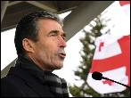
El secretario general de la OTAN, Anders Fogh Rasmussen,durante su visita a la base militar Vaziani en Tiflis (Georgia)a principios de noviembre.-EFE/Zviad Nikolaishvili
La organización internacional mantiene su compromiso de seguir trabajando con Pakistán para mejorar la cooperación
El secretario general de la OTAN, Anders Fogh Rasmussen, ha asegurado que el ataque de la Alianza en el que murieron ayer 25 soldados paquistaníes fue un incidente "trágico y no intencionado".
Continuar leyendo...
Guerra: "Me produjo escalofríos que la dirección no diese la cara el 20-N"
2011-11-27T12:20:00+01:00
Considera que la insistencia del PSC en posicionarse como otro partido dificultaría la candidatura de Chacón
Carme Chacón es competente pero tiene "un elemento complicado". Para el dirigente socialista, Alfonso Guerra, la insistencia del PSC en posicionarse como un partido distinto al PSOE dificulta el ascenso de la cabeza de lista por Barcelona en las pasadas elecciones. En una entrevista en la Cadena SER, en la que también ha criticado la actitud de la dirección del partido la noche del 20-N, Guerra ha realizado estas declaraciones puntualizando que Chacón no se ha posicionado nunca en ese extremo del PSC.
El diputado del PSOE Alfonso Guerra durante la inauguración de la exposición "El socialista 1886-2011. Prensa y compromiso político".-EFE//Mondelo
Considera que la insistencia del PSC en posicionarse como otro partido dificultaría la candidatura de Chacón
Carme Chacón es competente pero tiene "un elemento complicado". Para el dirigente socialista, Alfonso Guerra, la insistencia del PSC en posicionarse como un partido distinto al PSOE dificulta el ascenso de la cabeza de lista por Barcelona en las pasadas elecciones. En una entrevista en la Cadena SER, en la que también ha criticado la actitud de la dirección del partido la noche del 20-N, Guerra ha realizado estas declaraciones puntualizando que Chacón no se ha posicionado nunca en ese extremo del PSC.
Continuar leyendo...
Patxi López cree que "ha llegado la hora" de acercar presos de ETA
2011-11-27T12:31:00+01:00
El lehendakari asegura en una entrevista que se pueden hacer gestos "sin que nadie se salte la ley"
El lehendakari Patxi López considera que "ha llegado la hora" de hacer gestos con los presos de ETA, como el "acercamiento" a cárceles próximas a sus domicilios, la reinserción "a quien corresponda" o el acceso al tercer grado para los reclusos enfermos. En una entrevista en el diario El Correo ha considerado que este tipo de medidas se pueden llevar a la práctica "sin que nadie se salte la ley o la legalidad".
Patxi López, a su llegada, este sábado, al Comité Federal del PSOE.- REUTERS
El lehendakari asegura en una entrevista que se pueden hacer gestos "sin que nadie se salte la ley" El lehendakari Patxi López considera que "ha llegado la hora" de hacer gestos con los presos de ETA, como el "acercamiento" a cárceles próximas a sus domicilios, la reinserción "a quien corresponda" o el acceso al tercer grado para los reclusos enfermos. En una entrevista en el diario El Correo ha considerado que este tipo de medidas se pueden llevar a la práctica "sin que nadie se salte la ley o la legalidad".
Continuar leyendo...
Los antinucleares alemanes paralizan el avance del tren 'castor'
2011-11-27T09:16:00+01:00
Los activistas han conseguido cortar la vía en varias ocasiones
Las sucesivas acciones de protesta de los antinucleares alemanes ha impedido casi por completo el avance del tren con basura radiactiva en su ruta hacia el depósito de Gorleben (norte del país), pese a las fuertes medidas de seguridad.
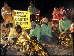
Acitivistas de Greenpeace se encadenan a las vías del 'tren cástor'.-MARC MULLER (AFP)
Las sucesivas acciones de protesta de los antinucleares alemanes ha impedido casi por completo el avance del tren con basura radiactiva en su ruta hacia el depósito de Gorleben (norte del país), pese a las fuertes medidas de seguridad.
Continuar leyendo...
"Somos la esperanza de los marroquíes"
2011-11-27T00:07:00+01:00
Ouafi Nezha, primera diputada nacional del Partido Justicia y Desarrollo
Ouafi Nezha, la primera diputada mujer de la agrupación islámica ganadora de las elecciones en Marruecos, el Partido Justicia y Desarrollo (PJD), recibió a Público en la sede de su formación durante el recuento de votos la noche de las elecciones. Esta política de 41 años, que luce hiyab, el velo islámico que enmarca el rostro, habla perfectamente francés e italiano, ya que vivió en París y Turín, donde ha trabajado con inmigrantes marroquíes.
Ouafi Nezha, primera diputada nacional del Partido Justicia y Desarrollo Ouafi Nezha, la primera diputada mujer de la agrupación islámica ganadora de las elecciones en Marruecos, el Partido Justicia y Desarrollo (PJD), recibió a Público en la sede de su formación durante el recuento de votos la noche de las elecciones. Esta política de 41 años, que luce hiyab, el velo islámico que enmarca el rostro, habla perfectamente francés e italiano, ya que vivió en París y Turín, donde ha trabajado con inmigrantes marroquíes.
Continuar leyendo...
El PSOE afronta "herido" la búsqueda de un nuevo rumbo
2011-11-27T08:30:00+01:00
"Es el tiempo de los militantes", proclama Zapatero ante el Comité Federal que convocó el Congreso para elegir a su sucesor
"Los congresos del PSOE se sabe cómo empiezan, pero nunca cómo terminan". En esta atmósfera, evocada por un veterano dirigente como una regla de su trayectoria histórica, los socialistas dieron ayer "el primer paso hacia el futuro" tras su hundimiento electoral hasta cuotas desconocidas desde 1977.
Panorámica del Comité Federal del PSOE celebrado ayer en la sede de la calle Ferraz. marta jara
"Es el tiempo de los militantes", proclama Zapatero ante el Comité Federal que convocó el Congreso para elegir a su sucesor "Los congresos del PSOE se sabe cómo empiezan, pero nunca cómo terminan". En esta atmósfera, evocada por un veterano dirigente como una regla de su trayectoria histórica, los socialistas dieron ayer "el primer paso hacia el futuro" tras su hundimiento electoral hasta cuotas desconocidas desde 1977.
Continuar leyendo...
Tres años y medio prometiendo milagros
2011-11-27T08:00:00+01:00
Rajoy asegura ahora que no tiene una "varita mágica", pero se ha pasado la legislatura afirmando que con el PP en el Gobierno habrá "crecimiento sólido" y la crisis económica se "arreglará en dos años"
El pasado 15 de octubre, a poco más de un mes para las elecciones generales, Mariano Rajoy presidió un acto de partido en Salamanca. Su mensaje dio pie a lo que iba a ser una campaña de perfil muy bajo. "No voy a prometer nada", solemnizó con la excusa de que su objetivo a partir de ese momento iba a ser el de "plantear retos" en lugar de "mirar hacia atrás".

Rajoy junto a Cristóbal Montoro en el Congreso.M. Jara
Rajoy asegura ahora que no tiene una "varita mágica", pero se ha pasado la legislatura afirmando que con el PP en el Gobierno habrá "crecimiento sólido" y la crisis económica se "arreglará en dos años"
El pasado 15 de octubre, a poco más de un mes para las elecciones generales, Mariano Rajoy presidió un acto de partido en Salamanca. Su mensaje dio pie a lo que iba a ser una campaña de perfil muy bajo. "No voy a prometer nada", solemnizó con la excusa de que su objetivo a partir de ese momento iba a ser el de "plantear retos" en lugar de "mirar hacia atrás".
Continuar leyendo...
La Junta apela al partido del sofá
2011-11-27T08:00:00+01:00
Los militares afirman que "Tahrir no es Egipto"
A falta de un día para sus primeras elecciones libres, se debería respirar en Egipto aires de ilusión y esperanza. Como sucedió hace apenas un mes en Túnez, la primera estación de la Primavera Árabe. Sin embargo, en las horas previas a la apertura de los comicios electorales, los egipcios sienten más bien confusión sobre el presente político, y angustia sobre su futuro.
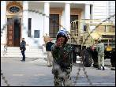
Un soldado egipcio, ayer frente a la sede del Gobierno en El Cairo.A.Jadallah / REUTERS
Los militares afirman que "Tahrir no es Egipto"
A falta de un día para sus primeras elecciones libres, se debería respirar en Egipto aires de ilusión y esperanza. Como sucedió hace apenas un mes en Túnez, la primera estación de la Primavera Árabe. Sin embargo, en las horas previas a la apertura de los comicios electorales, los egipcios sienten más bien confusión sobre el presente político, y angustia sobre su futuro.
Continuar leyendo...
Petróleo en Vallecas
2011-11-26T21:00:00+01:00
El Valencia amortiza sus pocas ocasiones de gol y acaba pidiendo la hora
El Valencia trasladó al terreno de juego su superioridad en la clasificación y se llevó los tres puntos de Vallecas. El Rayo no bajó nunca los brazos, pero no pudo zafarse de la presión que ejercieron los de Emery. Un gol de Jonas mediada la primera mitad puso el partido de cara para los levantinos, si bien lo acabaron embotellado y pidiendo la hora.
El Valencia amortiza sus pocas ocasiones de gol y acaba pidiendo la hora
El Valencia trasladó al terreno de juego su superioridad en la clasificación y se llevó los tres puntos de Vallecas. El Rayo no bajó nunca los brazos, pero no pudo zafarse de la presión que ejercieron los de Emery. Un gol de Jonas mediada la primera mitad puso el partido de cara para los levantinos, si bien lo acabaron embotellado y pidiendo la hora.
Continuar leyendo...
El 15-M busca soluciones en Marinaleda
2011-11-27T08:00:00+01:00
El movimiento celebra un encuentro en el emblemático feudo de la izquierda jornalera
Gobernada desde hace 32 años por Juan Manuel Sánchez Gordillo, emblema de la izquierda jornalera en Andalucía, Marinaleda no es, políticamente, un pueblo más. Además de por el singular perfil de Gordillo, líder de la formación nacionalista CUT-BAI, integrada en IU, este pueblo sevillano de 2.759 habitantes es conocido por algunas apuestas políticas que desbordan en la práctica por la izquierda los planteamientos de la coalición. Varios ejemplos: el Ayuntamiento financia una semana cultural en lugar de la Semana Santa, hay 350 viviendas 90 metros cuadrados, más cien de patio por las que los jornaleros pagan 15 euros/mes, el propio alcalde ha liderado exitosas ocupaciones de fincas... No es raro que el 15-M lo mire entre la simpatía y la curiosidad.
Participantes en el encuentro, ayer en Marinaleda.R. C.
El movimiento celebra un encuentro en el emblemático feudo de la izquierda jornalera Gobernada desde hace 32 años por Juan Manuel Sánchez Gordillo, emblema de la izquierda jornalera en Andalucía, Marinaleda no es, políticamente, un pueblo más. Además de por el singular perfil de Gordillo, líder de la formación nacionalista CUT-BAI, integrada en IU, este pueblo sevillano de 2.759 habitantes es conocido por algunas apuestas políticas que desbordan en la práctica por la izquierda los planteamientos de la coalición. Varios ejemplos: el Ayuntamiento financia una semana cultural en lugar de la Semana Santa, hay 350 viviendas 90 metros cuadrados, más cien de patio por las que los jornaleros pagan 15 euros/mes, el propio alcalde ha liderado exitosas ocupaciones de fincas... No es raro que el 15-M lo mire entre la simpatía y la curiosidad.
Continuar leyendo...
El trámite número 13
2011-11-26T21:41:00+01:00
El Madrid encadena la victoria decimotercera, los mismos años que sumará el Atlético sin ganar el derbi. Los blancos sudan para remontan el 0-1 de Adrián
El espejismo duró 24 minutos. Los que tardó en aparecer Benzema para regatear a Courtois y ser derribado por este. El penalti, la expulsión del portero belga, el gol de Cristiano y la cobardía de Manzano al retirar de inmediato a Diego para dar entrada al guardameta suplente desmontaron el plan de un Atlético firme, intenso, respondón como pocas veces y duro. Un equipo que hasta entonces había incomodado al Madrid hasta el punto de frenar el tradicional arreón inicial blanco e incluso adelantarse en el marcador con un inesperado gol al cuarto de hora.
El Madrid encadena la victoria decimotercera, los mismos años que sumará el Atlético sin ganar el derbi. Los blancos sudan para remontan el 0-1 de Adrián
El espejismo duró 24 minutos. Los que tardó en aparecer Benzema para regatear a Courtois y ser derribado por este. El penalti, la expulsión del portero belga, el gol de Cristiano y la cobardía de Manzano al retirar de inmediato a Diego para dar entrada al guardameta suplente desmontaron el plan de un Atlético firme, intenso, respondón como pocas veces y duro. Un equipo que hasta entonces había incomodado al Madrid hasta el punto de frenar el tradicional arreón inicial blanco e incluso adelantarse en el marcador con un inesperado gol al cuarto de hora.
Continuar leyendo...
Gijón premia a 'El estudiante' y 'Declaración de guerra'
2011-11-26T21:00:00+01:00
El peso que el cine político ha tenido en el Festival de Cine de Gijón tuvo este sábado reflejo en su palmarés, que se cerró en empate. El estudiante, ópera prima del argentino Santiago Mitre, se hizo con los premios a mejor guión, el premio del jurado joven y el de mejor película, que ha compartido con la francesa Declaración de guerra, de Valérie Donzelli.
El peso que el cine político ha tenido en el Festival de Cine de Gijón tuvo este sábado reflejo en su palmarés, que se cerró en empate. El estudiante, ópera prima del argentino Santiago Mitre, se hizo con los premios a mejor guión, el premio del jurado joven y el de mejor película, que ha compartido con la francesa Declaración de guerra, de Valérie Donzelli.
Continuar leyendo...
"La crisis de 2008 trajo consigo la muerte de la democracia"
2011-11-27T08:00:00+01:00
Entrevista al documentalista alemán Andres Veiel
Con 15 años, el documentalista alemán Andres Veiel (Stuttgart, 1959) acudió a los juicios en Stammheim contra los líderes de la Fracción del Ejército Rojo Andreas Baader, Gudrun Ensslin y Ulrike Meinhof. Ese momento de idealización adolescente se ha convertido en un argumento recurrente en su cine. Si en Black Box BRD (2001) yuxtaponía las biografías de los asesinos y de sus víctimas, ahora con Si no nosotros, quién, debuta en la ficción con una recreación del germen del terrorismo germano. La película se alzó con el Giraldillo de Plata y el premio al mejor actor en el pasado Festival de Cine Europeo de Sevilla, y que acaba de llegar a las salas de cine.
Andres Veiel se ha pasado del documental a la ficción en esta película.-EFE
Entrevista al documentalista alemán Andres Veiel
Con 15 años, el documentalista alemán Andres Veiel (Stuttgart, 1959) acudió a los juicios en Stammheim contra los líderes de la Fracción del Ejército Rojo Andreas Baader, Gudrun Ensslin y Ulrike Meinhof. Ese momento de idealización adolescente se ha convertido en un argumento recurrente en su cine. Si en Black Box BRD (2001) yuxtaponía las biografías de los asesinos y de sus víctimas, ahora con Si no nosotros, quién, debuta en la ficción con una recreación del germen del terrorismo germano. La película se alzó con el Giraldillo de Plata y el premio al mejor actor en el pasado Festival de Cine Europeo de Sevilla, y que acaba de llegar a las salas de cine.
Continuar leyendo...
El Gobierno que nos espera
2011-11-27T08:00:00+01:00
Las prioridades del Ejecutivo de Rajoy pasan por una nueva reforma laboral y el saneamiento del sistema financiero
Con un presidente del Gobierno in péctore empeñado en esperar a su discurso de investidura, no queda otro remedio que recurrir a técnicas interpretativas para indagar por dónde irán sus propuestas de gobierno. Una nueva rajoylogía, a imagen y semejanza de la vieja sovietología utilizada en su día para vislumbrar qué acontecía tras el opaco telón de acero, que bucea entre las declaraciones, acciones, omisiones y signos externos de su entorno, para descifrar las claves de lo que se mueve en la séptima planta de la sede del PP. Bajo esa perspectiva, los acontecimientos del pasado miércoles iluminan con sorprendente claridad lo que nos espera en el Congreso de los Diputados el próximo día 20.

El líder del PP y próximo presidente del Gobierno, Mariano Rajoy, en un acto de la campaña del 20-N.-EFE
Las prioridades del Ejecutivo de Rajoy pasan por una nueva reforma laboral y el saneamiento del sistema financiero
Con un presidente del Gobierno in péctore empeñado en esperar a su discurso de investidura, no queda otro remedio que recurrir a técnicas interpretativas para indagar por dónde irán sus propuestas de gobierno. Una nueva rajoylogía, a imagen y semejanza de la vieja sovietología utilizada en su día para vislumbrar qué acontecía tras el opaco telón de acero, que bucea entre las declaraciones, acciones, omisiones y signos externos de su entorno, para descifrar las claves de lo que se mueve en la séptima planta de la sede del PP. Bajo esa perspectiva, los acontecimientos del pasado miércoles iluminan con sorprendente claridad lo que nos espera en el Congreso de los Diputados el próximo día 20.
Continuar leyendo...
Letizia: una princesa para reinventar la monarquía
2011-11-27T08:00:00+01:00
Miguel Roig analiza las claves de su ensayo sobre la conflictiva reinvención de la monarquía. La crisis del sistema y la erosión del discurso triunfal sobre la fundación democrática dificultan su búsqueda de legitimidad
Transición, democracia, juancarlismo. Manuel Vázquez Montalbán lo llamó "el cuento del rey bueno y el pueblo responsable", pero las voces críticas se apagaron el 23 de febrero de 1981. El discurso televisivo de Juan Carlos I durante la asonada golpista culminó la juancarlización de la sociedad española. Los intelectuales sustituyeron las denuncias sobre el dedazo franquista por los vítores desaforados a la monarquía constitucional. El relato del rey como garantía de la estabilidad democrática no tenía rival. "La pieza clave del proceso es una actuación de un minuto y 26 segundos. Juan Carlos I construye ahí su capital simbólico y su imagen. Es su gran relato", explica Miguel Roig, autor de Las dudas de Hamlet, ensayo sobre Letizia Ortiz y las mutaciones de la monarquía española publicado por Península.
Miguel Roig analiza las claves de su ensayo sobre la conflictiva reinvención de la monarquía. La crisis del sistema y la erosión del discurso triunfal sobre la fundación democrática dificultan su búsqueda de legitimidad
Transición, democracia, juancarlismo. Manuel Vázquez Montalbán lo llamó "el cuento del rey bueno y el pueblo responsable", pero las voces críticas se apagaron el 23 de febrero de 1981. El discurso televisivo de Juan Carlos I durante la asonada golpista culminó la juancarlización de la sociedad española. Los intelectuales sustituyeron las denuncias sobre el dedazo franquista por los vítores desaforados a la monarquía constitucional. El relato del rey como garantía de la estabilidad democrática no tenía rival. "La pieza clave del proceso es una actuación de un minuto y 26 segundos. Juan Carlos I construye ahí su capital simbólico y su imagen. Es su gran relato", explica Miguel Roig, autor de Las dudas de Hamlet, ensayo sobre Letizia Ortiz y las mutaciones de la monarquía española publicado por Península.
Continuar leyendo...
Por necesidad y no por oportunidad
2011-11-27T08:00:00+01:00
En EEUU o Francia, más del 50% de los empleados prefiere trabajar por cuenta propia
En España, se emprende más por necesidad que por oportunidad. Es una de las conclusiones del Libro Blanco del Emprendor en España, elaborado por Esade, y que radiografía la situación del emprendimiento en nuestro país. Y es que en España se sigue prefiriendo el empleo al autoempleo. Mientras que en Francia o EEUU, el 51% y 55% de los trabajadores prefieren trabajar por cuenta propia, en España ese porcentaje es del 40%. "La gente emprende más por buscar una salida laboral que porque vean una oportunidad, una idea de negocio", asegura Luisa Alemany, autora del estudio y directora del Esade Entrepreneurship Institute.
En EEUU o Francia, más del 50% de los empleados prefiere trabajar por cuenta propia
En España, se emprende más por necesidad que por oportunidad. Es una de las conclusiones del Libro Blanco del Emprendor en España, elaborado por Esade, y que radiografía la situación del emprendimiento en nuestro país. Y es que en España se sigue prefiriendo el empleo al autoempleo. Mientras que en Francia o EEUU, el 51% y 55% de los trabajadores prefieren trabajar por cuenta propia, en España ese porcentaje es del 40%. "La gente emprende más por buscar una salida laboral que porque vean una oportunidad, una idea de negocio", asegura Luisa Alemany, autora del estudio y directora del Esade Entrepreneurship Institute.
Continuar leyendo...
"Tenemos la voluntad de hablar con el PP"
2011-11-27T08:00:00+01:00
Sabino Cuadra (Amurrio, 1949), diputado electo de Amaiur por Navarra, es un referente del sindicalismo en la izquierda abertzale
Sabino Cuadra (Amurrio, 1949), diputado electo de Amaiur por Navarra, es un referente del sindicalismo en la izquierda abertzale. Ejerció como abogado laboralista durante la dictadura y la Transición, hasta 1979, cuando empezó a trabajar en el Gobierno de Navarra. Fue miembro de CCOO y, desde 1997, es sindicalista de LAB. Su trayectoria política también es dilatada. Perteneció a LKI, Zutik, Batzarre y Euskal Herritarrok. Ahora llega al Congreso en nombre de Amaiur.
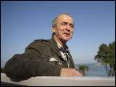
Sabino Cuadra es abogado y sindicalista.-HUMBERTO BILBAO
Sabino Cuadra (Amurrio, 1949), diputado electo de Amaiur por Navarra, es un referente del sindicalismo en la izquierda abertzale
Sabino Cuadra (Amurrio, 1949), diputado electo de Amaiur por Navarra, es un referente del sindicalismo en la izquierda abertzale. Ejerció como abogado laboralista durante la dictadura y la Transición, hasta 1979, cuando empezó a trabajar en el Gobierno de Navarra. Fue miembro de CCOO y, desde 1997, es sindicalista de LAB. Su trayectoria política también es dilatada. Perteneció a LKI, Zutik, Batzarre y Euskal Herritarrok. Ahora llega al Congreso en nombre de Amaiur.
Continuar leyendo...
"¿Qué pasará cuando los sacrificios no acaben con la crisis?"
2011-11-27T08:00:00+01:00
Director de la edición española de 'Le Monde Diplomatique'. Alerta del "golpe de estado financiero" que vive Europa.
La mundialización financiera ha creado su propio Estado. Un poder sin sociedad. Este rol es ejercido por los mercados (...). Las sociedades realmente existentes son sociedades sin poder. Y todo esto no deja de agravarse". Este texto tiene 14 años. En diciembre de 1997, Le Monde Diplomatique publicaba el editoral del director de su versión en español, Ignacio Ramonet, Desarmad los mercados financieros. Una alerta que sería germen del movimiento Attac, hoy presente en 40 países, que lucha por la creación de una tasa a las transac-ciones financieras mundiales (inspirada en la Tasa Tobin) para ir echando "granos de arena" en el engranaje de la especulación.
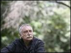
Ramonet, tras la presentación de su libro en junio pasado.-GRACIELA DEL RÍO
Director de la edición española de 'Le Monde Diplomatique'. Alerta del "golpe de estado financiero" que vive Europa.
La mundialización financiera ha creado su propio Estado. Un poder sin sociedad. Este rol es ejercido por los mercados (...). Las sociedades realmente existentes son sociedades sin poder. Y todo esto no deja de agravarse". Este texto tiene 14 años. En diciembre de 1997, Le Monde Diplomatique publicaba el editoral del director de su versión en español, Ignacio Ramonet, Desarmad los mercados financieros. Una alerta que sería germen del movimiento Attac, hoy presente en 40 países, que lucha por la creación de una tasa a las transac-ciones financieras mundiales (inspirada en la Tasa Tobin) para ir echando "granos de arena" en el engranaje de la especulación.
Continuar leyendo...
Dos muertos al estrellarse un ultraligero
2011-11-26T20:27:00+01:00
Un profesor y su alumno murieron durante un vuelo de instrucción
Un profesor y su alumno murieron durante un vuelo de instrucción cuando se estrelló el ultraligero en el que viajaban. El aparato se incendió al chocar contra la carretera que va de Palma a Manacor (Mallorca), informa Efe. Las dos personas que viajaban a bordo eran el instructor y el alumno de una escuela de vuelo de Vilafranca de Bonany. Los dos eran alemanes.
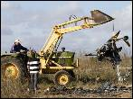
Varios operarios retiran el ultraligero accidentado.-EFE
Un profesor y su alumno murieron durante un vuelo de instrucción
Un profesor y su alumno murieron durante un vuelo de instrucción cuando se estrelló el ultraligero en el que viajaban. El aparato se incendió al chocar contra la carretera que va de Palma a Manacor (Mallorca), informa Efe. Las dos personas que viajaban a bordo eran el instructor y el alumno de una escuela de vuelo de Vilafranca de Bonany. Los dos eran alemanes.
Continuar leyendo...
Rouco exige al PP un retroceso hacia la Religión obligatoria
2011-11-27T08:00:00+01:00
Los obispos quieren recuperar la LOCE
Apenas unas horas después de que el portavoz de la Conferencia Episcopal, Juan Antonio Martínez Camino, asegurara que desde la Iglesia "no se va a dar ninguna directiva al Gobierno, porque no se le ha dado nunca a nadie", el cardenal de Madrid, Antonio María Rouco Varela, ponía a su secretario general al pie de los caballos al reclamar al nuevo Gobierno, "en este momento histórico", la recuperación de la Ley Orgánica de Calidad de la Educación (LOCE), derogada por el PSOE en 2004, y en especial una alternativa obligatoria a la clase de Religión.
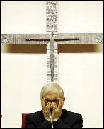
Rouco clausuró el acto de Escuelas Católicas.-M. PATXOT
Los obispos quieren recuperar la LOCE
Apenas unas horas después de que el portavoz de la Conferencia Episcopal, Juan Antonio Martínez Camino, asegurara que desde la Iglesia "no se va a dar ninguna directiva al Gobierno, porque no se le ha dado nunca a nadie", el cardenal de Madrid, Antonio María Rouco Varela, ponía a su secretario general al pie de los caballos al reclamar al nuevo Gobierno, "en este momento histórico", la recuperación de la Ley Orgánica de Calidad de la Educación (LOCE), derogada por el PSOE en 2004, y en especial una alternativa obligatoria a la clase de Religión.
Continuar leyendo...
El vicepresidente yemení convoca elecciones en febrero de 2012
2011-11-26T19:41:00+01:00
Saleh acata la decisión del Consejo de Cooperación del Golfo y renuncia al poder, pero conservando la inmunidad
El vicepresidente del Yemen, Abdo Rabu Mansur Hadi, emitió hoy un decreto por el que convoca elecciones presidenciales para el 21 de febrero de 2012, según ha anunciado la televisión estatal.
Una niña sostiene una bandera durante una marcha en la que se pide que se someta a juicio al presidente yemení Ali Abdalá Saleh.Yahya Arhab / EFE
Saleh acata la decisión del Consejo de Cooperación del Golfo y renuncia al poder, pero conservando la inmunidad
El vicepresidente del Yemen, Abdo Rabu Mansur Hadi, emitió hoy un decreto por el que convoca elecciones presidenciales para el 21 de febrero de 2012, según ha anunciado la televisión estatal.
Continuar leyendo...
Los egipcios se preparan para dar el paso de las calles a las urnas
2011-11-26T18:57:00+01:00
Miles de egipcios se encargarán de supervisar el buen funcionamiento de los comicios. Mientras, los islamistas esperan que los votos supongan el fin de la crisis política
Tras los gases cubriendo las calles, las piedras contra la policía, la sangre en el suelo y, sobre todo, los interminables gritos desde las plazas, miles de ciudadanos se preparan ahora para dar un nuevo paso en la Revolución que iniciaron el 25 de Enero, la celebración de unas elecciones democráticas de donde surgirá un parlamento que conducirá el proceso de Transición.
Un manifestante en El Cairo grita consignas contra la Junta Militar y pidiendo democracia para Egipto.Mohammed Omar / EFE
Miles de egipcios se encargarán de supervisar el buen funcionamiento de los comicios. Mientras, los islamistas esperan que los votos supongan el fin de la crisis política Tras los gases cubriendo las calles, las piedras contra la policía, la sangre en el suelo y, sobre todo, los interminables gritos desde las plazas, miles de ciudadanos se preparan ahora para dar un nuevo paso en la Revolución que iniciaron el 25 de Enero, la celebración de unas elecciones democráticas de donde surgirá un parlamento que conducirá el proceso de Transición.
Continuar leyendo...
Se fuga de prisión un exdirectivo de Caja de Alcoy condenado por quiebra
2011-11-26T18:30:00+01:00
El condenado debía haber regresado al centro penitenciario de Alicante II (Villena) el pasado fin de semana después de un permiso
Uno de los directivos de la extinta Caja de Crédito de Alcoy (Alicante), que cumplía condena en la prisión de Villena, es buscado por las fuerzas de seguridad tras no regresar de un permiso penitenciario.
El condenado debía haber regresado al centro penitenciario de Alicante II (Villena) el pasado fin de semana después de un permiso
Uno de los directivos de la extinta Caja de Crédito de Alcoy (Alicante), que cumplía condena en la prisión de Villena, es buscado por las fuerzas de seguridad tras no regresar de un permiso penitenciario.
Continuar leyendo...
Vettel, 15 'poles' para la historia
2011-11-26T18:04:00+01:00
El alemán supera la marca de 1992 de Mansell como piloto que más veces ocupa la primera plaza de la parrilla en un Mundial
Lleva semanas negándolo de palabra y otras tantas desmintiéndose a sí mismo. Vettel dice que no le importan las estadísticas individuales, pero no levanta el pie pese a ser bicampeón del mundo hace mes y medio en Japón. Este sábado volvió a ser el más rápido y batió, con 15 (en 19 GP), el récord de poles en un año que ostentaba el británico Nigel Mansell (Williams) desde 1992.
El alemán supera la marca de 1992 de Mansell como piloto que más veces ocupa la primera plaza de la parrilla en un Mundial
Lleva semanas negándolo de palabra y otras tantas desmintiéndose a sí mismo. Vettel dice que no le importan las estadísticas individuales, pero no levanta el pie pese a ser bicampeón del mundo hace mes y medio en Japón. Este sábado volvió a ser el más rápido y batió, con 15 (en 19 GP), el récord de poles en un año que ostentaba el británico Nigel Mansell (Williams) desde 1992.
Continuar leyendo...
Ferrer se topa con el eterno Federer
2011-11-26T16:42:00+01:00
El suizo disputa hoy la final
No lleva ni cetro, ni corona ni un manto de armiño, pero por todo lo demás Federer siempre tiene el porte de un rey de cuento. La elegancia y determinación del suizo está fuera de toda duda. Ya no es el que llego a ser, el que definió la perfección con una raqueta, pero en los buenos momentos sigue repartido clases a quienes osan a apostarse al otro lado de la red.
Ferrer, durante el partido. REUTERS
El suizo disputa hoy la final
No lleva ni cetro, ni corona ni un manto de armiño, pero por todo lo demás Federer siempre tiene el porte de un rey de cuento. La elegancia y determinación del suizo está fuera de toda duda. Ya no es el que llego a ser, el que definió la perfección con una raqueta, pero en los buenos momentos sigue repartido clases a quienes osan a apostarse al otro lado de la red.
Continuar leyendo...
Arrecian las protestas en Alemania contra el tren con residuos radiactivos
2011-11-26T15:46:00+01:00
La Policía ha aplicado una política de "tolerancia cero" y ha cargado varias veces contra los manifestantes. Sólo le quedan 200 kilómetros al tren para llegar su destino
Las protestas de los antinucleares contra el tren "castor" cargado de residuos radiactivos han arreciado en Alemania, mientras el convoy se acerca entre fuertes medidas de seguridad a su destino, el deposito de Gorleben (norte del país).
Manifestación en la localidad de Dannenberg, en contra del transporte de residuos nucleares.-FABIAN BIMMER (REUTERS)
La Policía ha aplicado una política de "tolerancia cero" y ha cargado varias veces contra los manifestantes. Sólo le quedan 200 kilómetros al tren para llegar su destino Las protestas de los antinucleares contra el tren "castor" cargado de residuos radiactivos han arreciado en Alemania, mientras el convoy se acerca entre fuertes medidas de seguridad a su destino, el deposito de Gorleben (norte del país).
Continuar leyendo...
Gómez atribuye la derrota a las políticas "liberales" de Zapatero
2011-11-26T14:38:00+01:00
Se muestra partidario de que haya primarias para elegir al Secretario General
El líder del PSM, Tomás Gómez, ha reiterado su propuesta de que sean los militantes quienes elijan al secretario general del PSOE y ha atribuido la derrota de su partido en el 20-N no a la crisis, sino a las políticas "liberales" y de "derechas" aplicadas por el Gobierno para afrontarla.
Gómez ha hecho estas manifestaciones en rueda de prensa tras intervenir en el comité federal del PSOE, que hoy no desvelado si él pugnará por ese puesto, pero ha dejado claro que el partido debe dar la voz a los afiliados y que esta fuerza política necesita "un revulsivo, cambio y tiempo nuevo".
Se muestra partidario de que haya primarias para elegir al Secretario General
El líder del PSM, Tomás Gómez, ha reiterado su propuesta de que sean los militantes quienes elijan al secretario general del PSOE y ha atribuido la derrota de su partido en el 20-N no a la crisis, sino a las políticas "liberales" y de "derechas" aplicadas por el Gobierno para afrontarla.
Gómez ha hecho estas manifestaciones en rueda de prensa tras intervenir en el comité federal del PSOE, que hoy no desvelado si él pugnará por ese puesto, pero ha dejado claro que el partido debe dar la voz a los afiliados y que esta fuerza política necesita "un revulsivo, cambio y tiempo nuevo".
Continuar leyendo...
Obama no ha llamado aún a Rajoy para felicitarle
2011-11-26T13:57:00+01:00
Entre los 20 mandatarios que sí lo han hecho se encuentran Merkel, Sarkozy o Evo Morales
Más de 20 mandatarios han llamado a Mariano Rajoy para felicitarle por su victoria electoral. En la relación que ha remitido el Partido Popular a los medios de domunicación se encuentran Nicolas Sarkozy, Angela Merkel, Felipe Calderón o Mahmud Abbas. Sin embargo entre ellos no está el presidente de EEUU, Barak Obama.
El candidato ganador, Mariano Rajoy, en el balcón de la calle Génova.- ÁNGEL NAVARRETE / MÓNICA PATXOT
Entre los 20 mandatarios que sí lo han hecho se encuentran Merkel, Sarkozy o Evo Morales Más de 20 mandatarios han llamado a Mariano Rajoy para felicitarle por su victoria electoral. En la relación que ha remitido el Partido Popular a los medios de domunicación se encuentran Nicolas Sarkozy, Angela Merkel, Felipe Calderón o Mahmud Abbas. Sin embargo entre ellos no está el presidente de EEUU, Barak Obama.
Continuar leyendo...
Detenida una pareja tras caer su hija de cuatro años de un balcón
2011-11-26T13:40:00+01:00
La niña, que se encuentra en estado grave, se encontraba sola
Los padres de una niña de 4 años han sido detenidos después de dejar sola a la pequeña en su casa de Elche (Alicante), tras lo cual la menor se precipitó a la calle desde el balcón del cuarto piso del edificio, por lo que está grave.
La niña, que se encuentra en estado grave, se encontraba sola
Los padres de una niña de 4 años han sido detenidos después de dejar sola a la pequeña en su casa de Elche (Alicante), tras lo cual la menor se precipitó a la calle desde el balcón del cuarto piso del edificio, por lo que está grave.
Continuar leyendo...
Rubalcaba: "Cuando la política se desprestigia sufre la izquierda"
2011-11-26T11:10:00+01:00
El candidato socialista al 20-N ha defendido en su intervención ante el Comité Federal de los socialistas que "cuando la política se desprestigia es la izquierda la que sufre". Ni Rubalcaba ni Chacón desvelan si optarán a liderar el PSOE
"Cuando la política se desprestigia es la izquierda la que sufre". Es una de las reflexiones sobre los resultados del 20-N que Alfredo Pérez Rubalcaba ha lanzado durante la apertura del Comité Federal del PSOE en la sede madrileña de Ferraz.
El candidato socialista al 20-N ha defendido en su intervención ante el Comité Federal de los socialistas que "cuando la política se desprestigia es la izquierda la que sufre". Ni Rubalcaba ni Chacón desvelan si optarán a liderar el PSOE
"Cuando la política se desprestigia es la izquierda la que sufre". Es una de las reflexiones sobre los resultados del 20-N que Alfredo Pérez Rubalcaba ha lanzado durante la apertura del Comité Federal del PSOE en la sede madrileña de Ferraz.
Continuar leyendo...
Chacón no desvela si aspirará a liderar el PSOE
2011-11-26T11:11:00+01:00
Espera que la próxima elección del líder de los socialistas sea a través de un "ejemplar ejercicio democrático"
Chacón está en todas las quinielas para liderar el PSOE después de la histórica derrota del 20-N, pero de momento no suelta prenda. La ministra de Defensa, ha evitado desvelar este sábado si será candidata a la Secretaría General del PSOE y sólo ha subrayado que la elección del próximo líder se hará mediante un "ejemplar ejercicio democrático", a su llegada al Comité Federal que analizará peor resultado electoral que los socialistas han obtenido desde el inicio de la democracia.
Espera que la próxima elección del líder de los socialistas sea a través de un "ejemplar ejercicio democrático"
Chacón está en todas las quinielas para liderar el PSOE después de la histórica derrota del 20-N, pero de momento no suelta prenda. La ministra de Defensa, ha evitado desvelar este sábado si será candidata a la Secretaría General del PSOE y sólo ha subrayado que la elección del próximo líder se hará mediante un "ejemplar ejercicio democrático", a su llegada al Comité Federal que analizará peor resultado electoral que los socialistas han obtenido desde el inicio de la democracia.
Continuar leyendo...
Tomás Gómez: "No soy partidario de que se indulte a un banquero"
2011-11-26T10:20:00+01:00
El líder del PSM se ha opuesto a la medida de gracia en declaraciones a la entrada del Comité Federal del PSOE
El secretario general del PSM, Tomás Gómez, se ha mostrado crítico con la decisión del Gobierno de conceder el indulto al consejero delegado del Grupo Santander, Alfredo Sáenz, de la condena a tres meses de prisión e inhabilitación, al asegurar: "No soy partidario de que se indulte a un banquero, y menos en estos momentos".
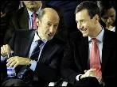
Tomás Gómez (i), durante el cierre de campaña junto a Rubalcaba (d) en el cierre de campaña de las Elecciones Generales.-AFP
El secretario general del PSM, Tomás Gómez, se ha mostrado crítico con la decisión del Gobierno de conceder el indulto al consejero delegado del Grupo Santander, Alfredo Sáenz, de la condena a tres meses de prisión e inhabilitación, al asegurar: "No soy partidario de que se indulte a un banquero, y menos en estos momentos".
Continuar leyendo...
Ferrer cae ante Berdych y se medirá con Federer en semifinales
2011-11-25T23:46:00+01:00
Con su derrota, Djokovic queda oficialmente fuera de la 'Copa Masters'
El tenista español David Ferrer cerró la primera fase de la Copa Masters con una derrota tras caer ante Tomas Berdych (3-6, 7-5, 6-1), con lo que el alicantino se medirá a Roger Federer en semifinales, donde también estará el checo, apartando oficialmente del O2 al número uno del mundo, el serbio Novak Djokovic.
David Ferrer, en un momento del partido.-GLYN KIRK (AFP)
Con su derrota, Djokovic queda oficialmente fuera de la 'Copa Masters'
El tenista español David Ferrer cerró la primera fase de la Copa Masters con una derrota tras caer ante Tomas Berdych (3-6, 7-5, 6-1), con lo que el alicantino se medirá a Roger Federer en semifinales, donde también estará el checo, apartando oficialmente del O2 al número uno del mundo, el serbio Novak Djokovic.
Continuar leyendo...
La izquierda europea apuesta por "renovarse"
2011-11-26T08:00:00+01:00
Los socialistas europeos analizan los últimos resultados
La izquierda europea se bate en retirada, pero pretende volver a contar en el mapa político muy pronto. Con esa constatación y esa promesa termina hoy en Bruselas el congreso del Partido Socialista Europeo, que reúne a cientos de activistas de toda Europa bajo el lema "Renovarse". Tras la derrota del PSOE en las elecciones generales españolas, el pasado domingo, sólo hay cuatro países en la Unión Europea con un jefe de Gobierno de izquierdas: Dinamarca, Austria, Eslovenia y Chipre.
Carteles de apoyo, ayer, a Rasmussen, presidente de los socialistas europeos.AP
Los socialistas europeos analizan los últimos resultados
La izquierda europea se bate en retirada, pero pretende volver a contar en el mapa político muy pronto. Con esa constatación y esa promesa termina hoy en Bruselas el congreso del Partido Socialista Europeo, que reúne a cientos de activistas de toda Europa bajo el lema "Renovarse". Tras la derrota del PSOE en las elecciones generales españolas, el pasado domingo, sólo hay cuatro países en la Unión Europea con un jefe de Gobierno de izquierdas: Dinamarca, Austria, Eslovenia y Chipre.
Continuar leyendo...
La reforma constitucional de Mohamed VI no logra convencer a los votantes
2011-11-25T23:30:00+01:00
Los islamistas cantan victoria en las elecciones legislativas de Marruecos
Marruecos tuvo la oportunidad de poner fin a las reformas emprendidas desde la eclosión de las revueltas árabes o de mostrar su inconformismo con el sistema. Sus ciudadanos participaron en unas elecciones legislativas que tendrían que haberse celebrado en 2012, pero que el rey, Mohamed VI, adelantó ante las protestas del Movimiento 20 de Febrero.
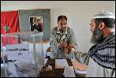
Un marroquí vota en Rabat durante los primeros comicios legislativos tras la reforma de la Constitución. -AFP
Los islamistas cantan victoria en las elecciones legislativas de Marruecos
Marruecos tuvo la oportunidad de poner fin a las reformas emprendidas desde la eclosión de las revueltas árabes o de mostrar su inconformismo con el sistema. Sus ciudadanos participaron en unas elecciones legislativas que tendrían que haberse celebrado en 2012, pero que el rey, Mohamed VI, adelantó ante las protestas del Movimiento 20 de Febrero.
Continuar leyendo...
El PSOE repetirá el modelo de congreso que aupó a Zapatero
2011-11-26T08:00:00+01:00
La cúpula dirigente renuncia a un pacto por arriba por temor a verse desautorizada por los militantes. Los aspirantes podrán formalizar a partir de hoy sus "precandidaturas" con el aval del 15% del Comité Federal
"Los militantes quieren hablar y si nosotros arreglamos por arriba, ellos corregirán desde abajo". En medio del barullo declarativo en el que se ha enredado la cúpula dirigente, esta frase de un líder territorial explica lo que está ocurriendo en el proceso abierto para decidir el sucesor de José Luis Rodríguez Zapatero tras el hundimiento electoral del domingo.
Pantalla gigante desplegada en la Conferencia Política que organizó el PSOE para aprobar el programa electoral del 20-N.-MARTA JARA
La cúpula dirigente renuncia a un pacto por arriba por temor a verse desautorizada por los militantes. Los aspirantes podrán formalizar a partir de hoy sus "precandidaturas" con el aval del 15% del Comité Federal
"Los militantes quieren hablar y si nosotros arreglamos por arriba, ellos corregirán desde abajo". En medio del barullo declarativo en el que se ha enredado la cúpula dirigente, esta frase de un líder territorial explica lo que está ocurriendo en el proceso abierto para decidir el sucesor de José Luis Rodríguez Zapatero tras el hundimiento electoral del domingo.
Continuar leyendo...
Alemania aumentará su déficit en 4.000 millones mientras exige al resto recortes
2011-11-25T23:01:00+01:00
La oposición critica la incoherencia de Merkel al aplicar subidas y pedir a Europa rebajas
En casa del herrero, cuchillo de palo. Tras una intensa semana de debate parlamentario, la Cámara Baja alemana (Bundestag) aprobó este viernes, sólo gracias a los votos de la coalición cristianodemócrata y liberal en el Gobierno, los presupuestos para 2012. El proyecto contempla un nuevo desfase entre ingresos y gastos de 26.100 millones de euros, 4.000 millones más que en 2011 sobre un PIB de 2,56 billones. Esto supone un 0,1% más de déficit, hasta el 1%.
Merkel habla con Schäuble.-EFE
La oposición critica la incoherencia de Merkel al aplicar subidas y pedir a Europa rebajas
En casa del herrero, cuchillo de palo. Tras una intensa semana de debate parlamentario, la Cámara Baja alemana (Bundestag) aprobó este viernes, sólo gracias a los votos de la coalición cristianodemócrata y liberal en el Gobierno, los presupuestos para 2012. El proyecto contempla un nuevo desfase entre ingresos y gastos de 26.100 millones de euros, 4.000 millones más que en 2011 sobre un PIB de 2,56 billones. Esto supone un 0,1% más de déficit, hasta el 1%.
Continuar leyendo...
La UE descartará los 'euroavales' a la banca
2011-11-26T08:00:00+01:00
Los 27 trabajan ya en prorrogar, con cambios, el sistema actual de ayudas
Ni eurobonos, ni euro-avales. La canciller alemana, Angela Merkel, se opone también a demostrar un apoyo decidido al sistema bancario europeo a través de los avales conjuntos para que los bancos emitan deuda. Fuentes comunitarias consultadas por Público descartaron ayer que la opción esté todavía sobre la mesa de los ministros de Economía de la Unión Europea a pesar de la insistencia de la Comisión, España e Italia. "Es seguro que el esquema será coordinado, pero no mutualizado", aseguraron.
Merkel se opone a apoyar al sistema bancario a través de avales conjuntos.BLOOMBERG
Los 27 trabajan ya en prorrogar, con cambios, el sistema actual de ayudas
Ni eurobonos, ni euro-avales. La canciller alemana, Angela Merkel, se opone también a demostrar un apoyo decidido al sistema bancario europeo a través de los avales conjuntos para que los bancos emitan deuda. Fuentes comunitarias consultadas por Público descartaron ayer que la opción esté todavía sobre la mesa de los ministros de Economía de la Unión Europea a pesar de la insistencia de la Comisión, España e Italia. "Es seguro que el esquema será coordinado, pero no mutualizado", aseguraron.
Continuar leyendo...
El Instituto Andaluz de la Mujer alerta del sexismo de 'Crepúsculo'
2011-11-26T08:00:00+01:00
Películas y libros que glorifican el romanticismo hasta el límite de los celos y la posesión triunfan entre los adolescentes
"Hoy en día a las adolescentes, si les preguntas si se sienten inferiores a ellos, se ríen. Ha desaparecido el complejo de inferioridad. Saben que son mejores estudiantes, por ejemplo. Pero ese complejo ha desaparecido en lo público, por así decirlo.
Fotograma de la película.
Películas y libros que glorifican el romanticismo hasta el límite de los celos y la posesión triunfan entre los adolescentes
"Hoy en día a las adolescentes, si les preguntas si se sienten inferiores a ellos, se ríen. Ha desaparecido el complejo de inferioridad. Saben que son mejores estudiantes, por ejemplo. Pero ese complejo ha desaparecido en lo público, por así decirlo.
Continuar leyendo...
Demostración de fuerza popular en Tahrir contra los militares egipcios
2011-11-25T23:00:00+01:00
La simbólica plaza de El Cairo vive la mayor concentración de manifestantes desde la caída del dictador Mubarak
La oposición al Gobierno de la Junta Militar egipcia volvió a hacer una gran demostración de fuerza al desbordar los límites de la plaza Tahrir de El Cairo en la manifestación más multitudinaria desde la caída del raís Hosni Mubarak. Su mensaje fue muy alto y claro: los manifestantes no aceptan el nombramiento del nuevo primer ministro, Kamal Ganzuri, como salida a la crisis actual, sino que quieren el final de la tutela militar sobre la política del país
Al caer la noche, la plaza Tahrir de El Cairo seguía ayer ocupada por decenas de miles de personas y se había levantado un nuevo campamento. -AFP
La simbólica plaza de El Cairo vive la mayor concentración de manifestantes desde la caída del dictador Mubarak
La oposición al Gobierno de la Junta Militar egipcia volvió a hacer una gran demostración de fuerza al desbordar los límites de la plaza Tahrir de El Cairo en la manifestación más multitudinaria desde la caída del raís Hosni Mubarak. Su mensaje fue muy alto y claro: los manifestantes no aceptan el nombramiento del nuevo primer ministro, Kamal Ganzuri, como salida a la crisis actual, sino que quieren el final de la tutela militar sobre la política del país
Continuar leyendo...
La Fiscalía investigará a los directivos de Caixa Penedès
2011-11-26T08:00:00+01:00
Cuatro altos cargos contaban con un fondo de pensiones de más de 20 millones de euros
La Fiscalía Superior de Catalunya anunció ayer que abrirá diligencias para investigar las remuneraciones de los altos directivos de Caixa Penedès, que el pasado jueves tuvieron que dimitir de sus cargos a petición del consejo de administración tras conocerse que contaban con un plan de pensiones de más de 20 millones de euros. Según indicó la Fiscalía, el ministerio público intentará "determinar una posible responsabilidad penal".
Sede central de la entidad financiera en Vilafranca del Penedès.
Cuatro altos cargos contaban con un fondo de pensiones de más de 20 millones de euros
La Fiscalía Superior de Catalunya anunció ayer que abrirá diligencias para investigar las remuneraciones de los altos directivos de Caixa Penedès, que el pasado jueves tuvieron que dimitir de sus cargos a petición del consejo de administración tras conocerse que contaban con un plan de pensiones de más de 20 millones de euros. Según indicó la Fiscalía, el ministerio público intentará "determinar una posible responsabilidad penal".
Continuar leyendo...
López planteará a Rajoy modificar la política penitenciaria con los presos de ETA
2011-11-25T22:16:00+01:00
Urkullu replica que "nada que pueda plantear" el lehendakari "será novedoso"
El lehendakari, Patxi López, anunció que se reunirá con el futuro presidente del Gobierno, Mariano Rajoy, con el fin de abordar los pasos para "enterrar el largo ciclo del terrorismo", tras el "cese definitivo" de ETA. López reveló en el pleno de control del Parlamento vasco, a raíz de una pregunta de Ezker Batua, que ya había conversado con el presidente del PP tras las elecciones del 20-N, y que ambos habían coincidido en la necesidad de mantener un encuentro "más sosegado".
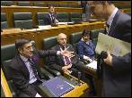
López conversa con Leopoldo Barreda.-EFE
Urkullu replica que "nada que pueda plantear" el lehendakari "será novedoso"
El lehendakari, Patxi López, anunció que se reunirá con el futuro presidente del Gobierno, Mariano Rajoy, con el fin de abordar los pasos para "enterrar el largo ciclo del terrorismo", tras el "cese definitivo" de ETA. López reveló en el pleno de control del Parlamento vasco, a raíz de una pregunta de Ezker Batua, que ya había conversado con el presidente del PP tras las elecciones del 20-N, y que ambos habían coincidido en la necesidad de mantener un encuentro "más sosegado".
Continuar leyendo...
3.000 científicos, contra el ERE del Príncipe Felipe
2011-11-26T08:00:00+01:00
Investigadores biomédicos de todo el mundo firman una carta de protesta
Los 113 científicos del Centro Príncipe Felipe (CIPF) despedidos este jueves no están solos. Ayer se dio a conocer un comunicado de investigadores en biomedicina de todo el mundo en protesta por el expediente de regulación de empleo (ERE) del Govern valenciano que ha reducido a la mitad la plantilla del CIPF tras eliminar 14 laboratorios y dejar a medio gas los 11 restantes. El documento, promovido a través de la web del Instituto de Investigaciones Biomédicas Alberto Sols, contaba al cierre de esta edición con más de 3.000 firmas.
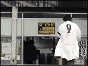
Un investigador del CIPF, el pasado miércoles.-EFE
Investigadores biomédicos de todo el mundo firman una carta de protesta
Los 113 científicos del Centro Príncipe Felipe (CIPF) despedidos este jueves no están solos. Ayer se dio a conocer un comunicado de investigadores en biomedicina de todo el mundo en protesta por el expediente de regulación de empleo (ERE) del Govern valenciano que ha reducido a la mitad la plantilla del CIPF tras eliminar 14 laboratorios y dejar a medio gas los 11 restantes. El documento, promovido a través de la web del Instituto de Investigaciones Biomédicas Alberto Sols, contaba al cierre de esta edición con más de 3.000 firmas.
Continuar leyendo...
Otra especie humana se paseó por Atapuerca
2011-11-26T08:00:00+01:00
Los paleoantropólogos creen que una población "hermana o incluso madre de todos los neandertales" vivió en la Sima de los Huesos hace 500.000 años. Un estudio de más de 500 dientes ha servido para reclasificar los fósiles del yacimiento
El mayor yacimiento de fósiles humanos jamás descubierto, la Sima de los Huesos de Atapuerca, acaba de dar una monumental sorpresa. Desde 1976, cuando se encon-traron los primeros, los paleoantropólogos han desen-terrado restos de una treintena de individuos, que vivieron a unos 12 kilómetros del actual Burgos hace unos 500.000 años.
Los investigadores se preparan para acceder a la Sima de los Huesos, durante la campaña de excavaciones del verano de 2010. AFP
Los paleoantropólogos creen que una población "hermana o incluso madre de todos los neandertales" vivió en la Sima de los Huesos hace 500.000 años. Un estudio de más de 500 dientes ha servido para reclasificar los fósiles del yacimiento
El mayor yacimiento de fósiles humanos jamás descubierto, la Sima de los Huesos de Atapuerca, acaba de dar una monumental sorpresa. Desde 1976, cuando se encon-traron los primeros, los paleoantropólogos han desen-terrado restos de una treintena de individuos, que vivieron a unos 12 kilómetros del actual Burgos hace unos 500.000 años.
Continuar leyendo...
Andalucía ilumina sus símbolos de la represión
2011-11-26T10:00:00+01:00
Un comité de expertos propone 14 Lugares de Memoria Histórica
Andalucía va perfilando su inventario de hitos del horror. Tras publicar hace un año un mapa con más de 600 fosas en 359 municipios y fijar un dato de víctimas de la represión de casi 50.000, ahora el empeño de la Consejería de Justicia es fijar en la memoria espacios emblemáticos de la represión, los llamados Lugares de Memoria Histórica. No sólo se trata de tapias o de fosas, aunque también, sino de mucho más. Un ejemplo: ayer comenzó su camino para convertirse en Lugar de Memoria Histórica lo que obliga a su señalización y preservación, una casa de la Compañía de Jesús, en la sevillana calle de Jesús del Gran Poder, que los sublevados convirtieron en centro de tortura en 1936. "No se sabe la gente que pudo pasar por allí. Infinidad de personas que luego eran fusiladas. Y el pasado de ese lugar es algo casi desconocido", explica a Público Fernando Martínez, catedrático de Historia Contemporánea de la Universidad de Almería. En una ciudad, Sevilla, en la que el general golpista Gonzalo Queipo de Llano yace en la basílica de la Macarena y tanto él como su esposa, Genoveva, dan nombre a sendas cofradías, no están de más este tipo de recuerdos.
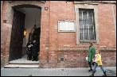
Fachada del edificio sevillano que los sublevados convirtieron en centro de tortura. -R. CARO
Un comité de expertos propone 14 Lugares de Memoria Histórica
Andalucía va perfilando su inventario de hitos del horror. Tras publicar hace un año un mapa con más de 600 fosas en 359 municipios y fijar un dato de víctimas de la represión de casi 50.000, ahora el empeño de la Consejería de Justicia es fijar en la memoria espacios emblemáticos de la represión, los llamados Lugares de Memoria Histórica. No sólo se trata de tapias o de fosas, aunque también, sino de mucho más. Un ejemplo: ayer comenzó su camino para convertirse en Lugar de Memoria Histórica lo que obliga a su señalización y preservación, una casa de la Compañía de Jesús, en la sevillana calle de Jesús del Gran Poder, que los sublevados convirtieron en centro de tortura en 1936. "No se sabe la gente que pudo pasar por allí. Infinidad de personas que luego eran fusiladas. Y el pasado de ese lugar es algo casi desconocido", explica a Público Fernando Martínez, catedrático de Historia Contemporánea de la Universidad de Almería. En una ciudad, Sevilla, en la que el general golpista Gonzalo Queipo de Llano yace en la basílica de la Macarena y tanto él como su esposa, Genoveva, dan nombre a sendas cofradías, no están de más este tipo de recuerdos.
Continuar leyendo...
La Junta Militar pretende mantener su lugar en la nueva Constitución
2011-11-27T18:02:00+01:00
A un día de las elecciones y frente a las protestas y las presiones internacionales, los militares insisten en conservar su poder en la construcción del nuevo Egipto
Las multitudinarias concentraciones en Tahrir, los muertos en las calles en enfrentamientos contra la Policía, la oposición de las principales fuerzas políticas y la presión internacional no sirven para disuadir a los militares de su afán por conservar cuotas de poder en el nuevo Egipto que está naciendo.
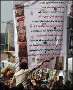
Una multitud grita con una pancarta en contra de la Junta Militar en la Plaza Tahrir.Andre Pain (EFE)
Las multitudinarias concentraciones en Tahrir, los muertos en las calles en enfrentamientos contra la Policía, la oposición de las principales fuerzas políticas y la presión internacional no sirven para disuadir a los militares de su afán por conservar cuotas de poder en el nuevo Egipto que está naciendo.
Continuar leyendo...
Alves: "Están tirando cohetes, pero esto se decide al final"
2011-11-27T17:19:00+01:00
El jugador del Barcelona trata de rebajar los ánimos madridistas tras la derrota ante el Getafe
El lateral derecho del Barcelona Dani Alves afirmó que el pulso que mantiene con el Real Madrid en la Liga BBVA es "el reto más apasionante" desde que el brasileño viste la camiseta del Barcelona, ahora a seis puntos de los blancos en la clasificación, tras la derrota ante el Getafe.
El jugador del Barcelona trata de rebajar los ánimos madridistas tras la derrota ante el Getafe
El lateral derecho del Barcelona Dani Alves afirmó que el pulso que mantiene con el Real Madrid en la Liga BBVA es "el reto más apasionante" desde que el brasileño viste la camiseta del Barcelona, ahora a seis puntos de los blancos en la clasificación, tras la derrota ante el Getafe.
Continuar leyendo...
Alemania y Francia aceptarían que el BCE compre deuda de forma masiva
2011-11-27T16:55:00+01:00
Un diario alemán amplía la información sobre la preparación en secreto de un nuevo Pacto de Estabilidad
El nuevo Pacto de Estabilidad del euro que podrían estar negociando en secreto Alemania y Francia según publicó ayer el diario germano Bild, podría allanar el camino para que el Banco Central Europeo (BCE) compre deuda de forma masiva, algo a lo que hasta ahora se había negado la canciller alemana, Angela Merkel, según informa otro periódico alemán, el Die Welt am Sonntag.
El presidente francés, Nicolas Sarkozy, y la canciller alemana, Angela Merkel.-MICHAEL PROBST (AP)
Un diario alemán amplía la información sobre la preparación en secreto de un nuevo Pacto de Estabilidad
El nuevo Pacto de Estabilidad del euro que podrían estar negociando en secreto Alemania y Francia según publicó ayer el diario germano Bild, podría allanar el camino para que el Banco Central Europeo (BCE) compre deuda de forma masiva, algo a lo que hasta ahora se había negado la canciller alemana, Angela Merkel, según informa otro periódico alemán, el Die Welt am Sonntag.
Continuar leyendo...
Los indignados reclaman una huelga general contra el capitalismo
2011-11-27T15:47:00+01:00
Cientos de indignados de diferentes puntos de Madrid se han dado cita en el centro
Cientos de indignados han marchado por Madrid para reclamar una huelga general y que el nuevo gobierno despliegue una política en favor de los trabajadores y no en beneficio "de las empresas, de los mercados" y "de lo que diga" la canciller alemana, Angela Merkel.
Un hombre rodeado de pancartas durante la marcha "Caminemos juntos contra la crisis y el capital a la huelga general".-EFE/Javier Lizón
Cientos de indignados de diferentes puntos de Madrid se han dado cita en el centro
Cientos de indignados han marchado por Madrid para reclamar una huelga general y que el nuevo gobierno despliegue una política en favor de los trabajadores y no en beneficio "de las empresas, de los mercados" y "de lo que diga" la canciller alemana, Angela Merkel.
Continuar leyendo...
Así se para un tren con residuos nucleares
2011-11-27T14:06:00+01:00
Continuar leyendo...
Putin volverá a aspirar a la presidencia de Rusia
2011-11-27T13:29:00+01:00
El actual primer ministro ha sido elegido por unanimidad como candidato por Rusia Unida
En un congreso al que han asistido 10.000 personas, celebrado en el estadio Luzhniki de Moscú, Vladimir Putin ha sido elegido de nuevo como candidato a la presidencia por Rusia Unida por unanimidad. "Han sido entregadas 614 papeletas. Resultados de la votación: 614 votos a favor, ninguno en contra", ha anunciado Borís Grizlov, presidente del Consejo Supremo de Rusia Unida, mientras miles de personas han celebrado el resultado coreando en pie: "Putin, Putin".
Putin junto al presidente Ruso, Medvedev.- AFP
El actual primer ministro ha sido elegido por unanimidad como candidato por Rusia Unida En un congreso al que han asistido 10.000 personas, celebrado en el estadio Luzhniki de Moscú, Vladimir Putin ha sido elegido de nuevo como candidato a la presidencia por Rusia Unida por unanimidad. "Han sido entregadas 614 papeletas. Resultados de la votación: 614 votos a favor, ninguno en contra", ha anunciado Borís Grizlov, presidente del Consejo Supremo de Rusia Unida, mientras miles de personas han celebrado el resultado coreando en pie: "Putin, Putin".
Continuar leyendo...
Detenido tras matar a su mujer en Terrasa
2011-11-27T12:37:00+01:00
El presunto autor llamó a la Policía y confesó el crimen
Una mujer ha muerto este domingo a manos de su marido en Terrassa (Barcelona), quien se ha entregado a los Mossos d'Esquadra tras cometer el crimen, ha informado la policía autonómica en un comunicado.El detenido, Francisco V.B., de 41 años y vecino de la localidad, ha sido detenido como autor de un delito de homicidio, cometido con un arma blanca.
Los mossos han recibido hacia las 9.00 horas una llamada del hombre, que ha explicado los hechos y ha manifestado su intención de entregarse a una patrulla. Los agentes se han desplazado al domicilio donde se encontraba la mujer, a la que han hallado muerta, a la vez que una segunda patrulla se ha dirigido al lugar donde se encontraba el agresor y lo han detenido.
El presunto autor llamó a la Policía y confesó el crimen
Una mujer ha muerto este domingo a manos de su marido en Terrassa (Barcelona), quien se ha entregado a los Mossos d'Esquadra tras cometer el crimen, ha informado la policía autonómica en un comunicado.El detenido, Francisco V.B., de 41 años y vecino de la localidad, ha sido detenido como autor de un delito de homicidio, cometido con un arma blanca.
Los mossos han recibido hacia las 9.00 horas una llamada del hombre, que ha explicado los hechos y ha manifestado su intención de entregarse a una patrulla. Los agentes se han desplazado al domicilio donde se encontraba la mujer, a la que han hallado muerta, a la vez que una segunda patrulla se ha dirigido al lugar donde se encontraba el agresor y lo han detenido.
Continuar leyendo...
Pakistán reducirá su cooperación con la OTAN
2011-11-27T10:20:00+01:00
Ha comunicado su decisión tras el ataque que ayer mató a 25 soldados en la frontera.
La ministra paquistaní de Exteriores, Hina Rabbani Khar, ha comunicado a su homóloga de EEUU, Hillary Clinton, la decisión de su Gobierno de disminuir la cooperación con la OTAN tras el ataque que ayer mató a 25 soldados de Pakistán.
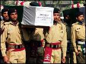
Los soldados paquistaníes cargan con los ataúdes de sus compañeros fallecidos en el ataque de la OTAN, hoy.-EFE/Arshad Arbab
La ministra paquistaní de Exteriores, Hina Rabbani Khar, ha comunicado a su homóloga de EEUU, Hillary Clinton, la decisión de su Gobierno de disminuir la cooperación con la OTAN tras el ataque que ayer mató a 25 soldados de Pakistán.
Continuar leyendo...
El Barça naufraga en Getafe
2011-11-27T00:26:00+01:00
Un gol de Valera propina a los de Guardiola la primera derrota de este curso. Los azulgrana, que no habían perdido en 27 partidos, se quedan a seis puntos del Madrid y a la espera del clásico
Majestuoso en San Siro, ante el Milán, esta misma semana, el Barcelona se complicó ayer la Liga en Getafe. 27 partidos después de su última derrota, los azulgrana sumaron la primera de esta temporada, en el momento menos oportuno, justo el día en que el Madrid reafirmaba su candidatura al título con su contundente victoria en el derbi de la capital. Queda mucho curso por delante y muchos puntos por sumar, pero los seis que separan ahora al Barça del Madrid obligan a los de Pep Guardiola a un esfuerzo mayúsculo. El técnico azulgrana había calificado el encuentro de vital. Lo será más que nunca ahora el clásico, a la vuelta de la esquina.
Un gol de Valera propina a los de Guardiola la primera derrota de este curso. Los azulgrana, que no habían perdido en 27 partidos, se quedan a seis puntos del Madrid y a la espera del clásico
Majestuoso en San Siro, ante el Milán, esta misma semana, el Barcelona se complicó ayer la Liga en Getafe. 27 partidos después de su última derrota, los azulgrana sumaron la primera de esta temporada, en el momento menos oportuno, justo el día en que el Madrid reafirmaba su candidatura al título con su contundente victoria en el derbi de la capital. Queda mucho curso por delante y muchos puntos por sumar, pero los seis que separan ahora al Barça del Madrid obligan a los de Pep Guardiola a un esfuerzo mayúsculo. El técnico azulgrana había calificado el encuentro de vital. Lo será más que nunca ahora el clásico, a la vuelta de la esquina.
Continuar leyendo...
Mourinho y Manzano empatan a quejas
2011-11-27T08:00:00+01:00
El madridista critica la dureza del Atlético y el rojiblanco, la expulsión de Courtois
Mourinho salió del partido enfurruñado y con ganas de reprochar el planteamiento del rival. "No he visto preguntas a Manzano sobre la dureza del Atlético. Mi equipo no ha querido hacer un partido ni feo ni bronco, ha querido jugar. Por suerte hoy existen espinilleras de carbono, son una ayuda y han hecho bien su trabajo. Alguno se va un poquito cojo", comentó el técnico.
El madridista critica la dureza del Atlético y el rojiblanco, la expulsión de Courtois
Mourinho salió del partido enfurruñado y con ganas de reprochar el planteamiento del rival. "No he visto preguntas a Manzano sobre la dureza del Atlético. Mi equipo no ha querido hacer un partido ni feo ni bronco, ha querido jugar. Por suerte hoy existen espinilleras de carbono, son una ayuda y han hecho bien su trabajo. Alguno se va un poquito cojo", comentó el técnico.
Continuar leyendo...
Rubalcaba marca las pautas de la oposición
2011-11-27T08:00:00+01:00
El candidato pronunció el discurso final: "Tenemos alternativa"
Nadie de entre los posibles aspirantes al cargo de secretario general dio ayer un paso al frente. Y, para más desconcierto, los miembros del Comité Federal 246 vieron a dos Alfredo Pérez Rubalcaba. El primero habló después del discurso de apertura de Zapatero y asumió "en primera persona" la derrota electoral, en un tono bajo que provocó comentarios de que había "perdido una oportunidad" para consolidarse como alternativa. El segundo Rubalcaba pronunció a puerta cerrada el discurso final, previo acuerdo con el secretario general, al que se reserva habitualmente esta prerrogativa, y quienes pudieron escucharle aseguran que habló "como si fuera el jefe de la oposición".
El candidato pronunció el discurso final: "Tenemos alternativa"
Nadie de entre los posibles aspirantes al cargo de secretario general dio ayer un paso al frente. Y, para más desconcierto, los miembros del Comité Federal 246 vieron a dos Alfredo Pérez Rubalcaba. El primero habló después del discurso de apertura de Zapatero y asumió "en primera persona" la derrota electoral, en un tono bajo que provocó comentarios de que había "perdido una oportunidad" para consolidarse como alternativa. El segundo Rubalcaba pronunció a puerta cerrada el discurso final, previo acuerdo con el secretario general, al que se reserva habitualmente esta prerrogativa, y quienes pudieron escucharle aseguran que habló "como si fuera el jefe de la oposición".
Continuar leyendo...
Fernando Vallejo contra el mundo
2011-11-26T21:00:00+01:00
El escritor colombiano recibe el Premio de Literatura en Lenguas Romances de la FIL
Puede ser muy "hijueputa", como él dice, pero es un hijo de puta tímido, inseguro. Escritor irreverente, visceral, la rabia que destilan sus palabras, escritas o escupidas ante cualquier micrófono, se empañan de melancolía al verlo en persona. Fernando Vallejo (Medellín, 1942) esquiva la mirada, le asustan las grabadoras, se sonroja ante los elogios. No concede entrevistas personales a los periodistas porque, alega, que lo que tiene que decir lo escribe; y cuando habla lo hace como si escribiese, directo, mordaz, con el ritmo golpeado de los disparos, físicos y verbales, que pueblan sus novelas.
El autor inauguró la feria . Raúl Ibañez
El escritor colombiano recibe el Premio de Literatura en Lenguas Romances de la FIL
Puede ser muy "hijueputa", como él dice, pero es un hijo de puta tímido, inseguro. Escritor irreverente, visceral, la rabia que destilan sus palabras, escritas o escupidas ante cualquier micrófono, se empañan de melancolía al verlo en persona. Fernando Vallejo (Medellín, 1942) esquiva la mirada, le asustan las grabadoras, se sonroja ante los elogios. No concede entrevistas personales a los periodistas porque, alega, que lo que tiene que decir lo escribe; y cuando habla lo hace como si escribiese, directo, mordaz, con el ritmo golpeado de los disparos, físicos y verbales, que pueblan sus novelas.
Continuar leyendo...
Las elecciones en Andalucía serán el 25 de marzo
2011-11-27T08:20:00+01:00
Se había manejado también como fecha el 18 de marzo, pero el resultado de las elecciones generales aconseja apurar al máximo la legislatura para distanciarse de esta convocatoria
Las elecciones autonómicas en Andalucía se celebrarán el 25 de marzo de 2012, último domingo del mes, según ha podido saber Público en fuentes del entorno del presidente de la Junta, José Antonio Griñán.
Se había manejado también como fecha el 18 de marzo, pero el resultado de las elecciones generales aconseja apurar al máximo la legislatura para distanciarse de esta convocatoria
Las elecciones autonómicas en Andalucía se celebrarán el 25 de marzo de 2012, último domingo del mes, según ha podido saber Público en fuentes del entorno del presidente de la Junta, José Antonio Griñán.
Continuar leyendo...
Griñán, barón de barones
2011-11-27T08:00:00+01:00
El presidente andaluz hace valer el peso de su federación en la renovación del PSOE. Los líderes territoriales discrepan sobre el papel de las bases
En el páramo de poder abierto ante el PSOE, Andalucía la próxima cita en la agenda electoral es una excepción, "la Galia socialista", como acuñó ayer su presidente, José Antonio Griñán. A salvo aún de las legiones del PP, esta comunidad es, además, la llave que abre el futuro del PSOE, al concentrar al 22% de su militancia. La federación andaluza aportará más delegados que ninguna otra al 38º Congreso. En el anterior (2008), Andalucía sumó 251 representantes de 995, cuando la segunda delegación, el País Valencià, tuvo 103. La proporción acredita su peso.
El presidente andaluz hace valer el peso de su federación en la renovación del PSOE. Los líderes territoriales discrepan sobre el papel de las bases
En el páramo de poder abierto ante el PSOE, Andalucía la próxima cita en la agenda electoral es una excepción, "la Galia socialista", como acuñó ayer su presidente, José Antonio Griñán. A salvo aún de las legiones del PP, esta comunidad es, además, la llave que abre el futuro del PSOE, al concentrar al 22% de su militancia. La federación andaluza aportará más delegados que ninguna otra al 38º Congreso. En el anterior (2008), Andalucía sumó 251 representantes de 995, cuando la segunda delegación, el País Valencià, tuvo 103. La proporción acredita su peso.
Continuar leyendo...
El Twitter chino cunde mucho más
2011-11-27T08:00:00+01:00
Famosos y multinacionales se lanzan a por los 500 millones de usuarios del país
Las redes sociales como herramienta de mercadotecnia. La idea no es nueva, pero en China alcanza otra dimensión. Tal es el empuje de internet en el gigante asiático, donde hay 500 millones de usuarios y subiendo, que nadie quiere perder el tren. Tampoco las grandes marcas y las celebrities mundiales, quienes han encontrado en los microblogs chinos un caladero donde lanzar sus redes para pescar toneladas de clientes y fans. Y todo ello, sin hablar ni una palabra de mandarín.
Cuenta en Weibo, el equivalente chino a Twitter, en un ordenador de Pekín, en febrero de este año. Bloomberg
Famosos y multinacionales se lanzan a por los 500 millones de usuarios del país
Las redes sociales como herramienta de mercadotecnia. La idea no es nueva, pero en China alcanza otra dimensión. Tal es el empuje de internet en el gigante asiático, donde hay 500 millones de usuarios y subiendo, que nadie quiere perder el tren. Tampoco las grandes marcas y las celebrities mundiales, quienes han encontrado en los microblogs chinos un caladero donde lanzar sus redes para pescar toneladas de clientes y fans. Y todo ello, sin hablar ni una palabra de mandarín.
Continuar leyendo...
'Curiosity' ya vuela en busca de vida en Marte
2011-11-27T08:00:00+01:00
La NASA lanza su mayor proyecto para investigar los secretos del planeta rojo. 'El rover', que cuenta con tecnología española, llegará en agosto de 2012
A Marte, ese frío y árido hermano rojo de la Tierra, no le gustan las visitas. Durante décadas se las ha apañado para darle calabazas a los pretendientes más decididos y audaces. Muchos intentaron desnudar sus secretos, pero la mayoría se quedó por el camino. Que se lo digan a los rusos, todavía desorientados tras la bofetada que supuso perder el control de la Phobos-Grunt, lanzada hace más de dos semanas con la intención de palpar una de sus lunas. Ayer partió a su encuentro el galán más ambicioso, la misión Mars Science Laboratory (MSL), que tratará de conquistar Marte a lomos de un corcel blanco de seis patas: el Curiosity, el vehículo más sofisticado y capaz de todos los desarrollados por la NASA.
Despegue del cohete con el 'Curiosity' a bordo, ayer.-AP
La NASA lanza su mayor proyecto para investigar los secretos del planeta rojo. 'El rover', que cuenta con tecnología española, llegará en agosto de 2012
A Marte, ese frío y árido hermano rojo de la Tierra, no le gustan las visitas. Durante décadas se las ha apañado para darle calabazas a los pretendientes más decididos y audaces. Muchos intentaron desnudar sus secretos, pero la mayoría se quedó por el camino. Que se lo digan a los rusos, todavía desorientados tras la bofetada que supuso perder el control de la Phobos-Grunt, lanzada hace más de dos semanas con la intención de palpar una de sus lunas. Ayer partió a su encuentro el galán más ambicioso, la misión Mars Science Laboratory (MSL), que tratará de conquistar Marte a lomos de un corcel blanco de seis patas: el Curiosity, el vehículo más sofisticado y capaz de todos los desarrollados por la NASA.
Continuar leyendo...
El retorno de la revista "más audaz"
2011-11-27T08:00:00+01:00
Una exposición en Madrid recorre los 37 años de historia de esta publicación de humor
Cuenta la leyenda que La Codorniz intentó abrir un número con un parte meteorológico en el que podía leerse: "Reina un fresco general procedente de Galicia", en clara alusión al general Franco, por aquel entonces jefe de Estado y de Gobierno. Sin embargo, esa portada nunca vio la luz. Eran tiempos de censura. Tampoco se sabe si La Codorniz planteó esta portada o fue fruto de la imaginación popular.
Una exposición en Madrid recorre los 37 años de historia de esta publicación de humor
Cuenta la leyenda que La Codorniz intentó abrir un número con un parte meteorológico en el que podía leerse: "Reina un fresco general procedente de Galicia", en clara alusión al general Franco, por aquel entonces jefe de Estado y de Gobierno. Sin embargo, esa portada nunca vio la luz. Eran tiempos de censura. Tampoco se sabe si La Codorniz planteó esta portada o fue fruto de la imaginación popular.
Continuar leyendo...
Manifestación contra la absolución de los guardias civiles condenados por torturas
2011-11-26T20:45:00+01:00
En la marcha, que ha tenido lugar en Pamplona, también se ha recordado la muerte a manos de la Policía de Mikel Zabalza
Unas 3.000 personas, según los organizadores, y 1.200, según la Policía Municipal, se han manifestado hoy en Pamplona contra la absolución de los cuatro guardias civiles que fueron condenados por torturas a los etarras Igor Portu y Mattin Sarasola.
Manifestación contra la tortura.Villar López/EFE
En la marcha, que ha tenido lugar en Pamplona, también se ha recordado la muerte a manos de la Policía de Mikel Zabalza Unas 3.000 personas, según los organizadores, y 1.200, según la Policía Municipal, se han manifestado hoy en Pamplona contra la absolución de los cuatro guardias civiles que fueron condenados por torturas a los etarras Igor Portu y Mattin Sarasola.
Continuar leyendo...
Asalto al último baluarte
2011-11-27T08:00:00+01:00
Con la deuda alemana sufriendo los primeros indicios de contagio, el tiempo se acaba para la Unión Monetaria Europea. La intransigencia de Merkel también ayudará a la derrota de Obama
Cada día que pasa, las carreras políticas de José Luis Rodríguez Zapatero y Barack Obama se parecen más. La confluencia de lugar, tiempo, y oportunidad llevaron a ambos al poder cargados de un enorme y refrescante caudal político renovador con el que sustituir a fuertes gobiernos de derechas. Si uno lo encauzó hacia la salida de las tropas de Irak, el final de ETA, y las leyes de matrimonio homosexual, aborto y dependencia, el otro sacó al país del borde de la recesión, salvó a dos de sus industrias más emblemáticas, Wall Street y el automóvil de Detroit, y extendió la atención médica a millones de ciudadanos.
Merkel, en una foto de archivo.-AFP
Con la deuda alemana sufriendo los primeros indicios de contagio, el tiempo se acaba para la Unión Monetaria Europea. La intransigencia de Merkel también ayudará a la derrota de Obama
Cada día que pasa, las carreras políticas de José Luis Rodríguez Zapatero y Barack Obama se parecen más. La confluencia de lugar, tiempo, y oportunidad llevaron a ambos al poder cargados de un enorme y refrescante caudal político renovador con el que sustituir a fuertes gobiernos de derechas. Si uno lo encauzó hacia la salida de las tropas de Irak, el final de ETA, y las leyes de matrimonio homosexual, aborto y dependencia, el otro sacó al país del borde de la recesión, salvó a dos de sus industrias más emblemáticas, Wall Street y el automóvil de Detroit, y extendió la atención médica a millones de ciudadanos.
Continuar leyendo...
La austeridad no es la solución
2011-11-27T08:00:00+01:00
El expresidente Mario Soares pide a los portugueses que se rebelen contra los recortes
Mario Soares, expresidente por dos mandatos y dos veces primer ministro de Portugal, mantiene intacta su enorme capacidad para intervenir en los grandes temas de su país.
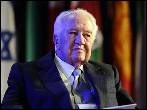
El expresidente portugués, Mario Soares.-AFP
El expresidente Mario Soares pide a los portugueses que se rebelen contra los recortes
Mario Soares, expresidente por dos mandatos y dos veces primer ministro de Portugal, mantiene intacta su enorme capacidad para intervenir en los grandes temas de su país.
Continuar leyendo...
"Pretendo llevar las demandas de la calle al Congreso"
2011-11-27T08:00:00+01:00
Alberto Garzón ha logrado recuperar para IU el escaño de Málaga
Alberto Garzón ha logrado recuperar para IU el escaño de Málaga. Garzón tiene 26 años, es economista y proviene de Rincón de la Victoria (Málaga). Afiliado a IU desde hace seis años, participó en las asambleas del 15-M, sobre todo en Sol y en Málaga, antes de ser elegido por la coalición como cabeza de lista.
Alberto Garzón, economista, tiene 26 años.-LAURA LEÓN
Alberto Garzón ha logrado recuperar para IU el escaño de Málaga
Alberto Garzón ha logrado recuperar para IU el escaño de Málaga. Garzón tiene 26 años, es economista y proviene de Rincón de la Victoria (Málaga). Afiliado a IU desde hace seis años, participó en las asambleas del 15-M, sobre todo en Sol y en Málaga, antes de ser elegido por la coalición como cabeza de lista.
Continuar leyendo...
"Los partidos minoritarios están más cerca de la gente"
2011-11-27T08:00:00+01:00
Joan Baldoví, de 53 años, representará a Compromís-Equo en el Congreso de los Diputados
Joan Baldoví, de 53 años, representará a Compromís-Equo en el Congreso de los Diputados. La coalición une al Bloc Nacionalista Valencià formación en la que milita Baldoví con fuerzas de izquierda Iniciativa del Poble Valencià y ecologistas como Els Verds y Equo. Fue alcalde de Sueca (Valencia) y ahora es concejal. Municipalista convencido, afirma que gracias a su experiencia en el consistorio sabe cuáles son los problemas de los ciudadanos.
Baldoví tiene experiencia en la política local.-J. NAVARRO
Joan Baldoví, de 53 años, representará a Compromís-Equo en el Congreso de los Diputados
Joan Baldoví, de 53 años, representará a Compromís-Equo en el Congreso de los Diputados. La coalición une al Bloc Nacionalista Valencià formación en la que milita Baldoví con fuerzas de izquierda Iniciativa del Poble Valencià y ecologistas como Els Verds y Equo. Fue alcalde de Sueca (Valencia) y ahora es concejal. Municipalista convencido, afirma que gracias a su experiencia en el consistorio sabe cuáles son los problemas de los ciudadanos.
Continuar leyendo...
Deslizados por la ciudad
2011-11-27T08:00:00+01:00
Patines en línea, monopatines y patinetes de dos y tres ruedas revolucionan el desplazamiento urbano
Por la adrenalina de la velocidad, por la sensación que produce desplazarse sin poner un pie en el suelo, o simplemente porque es un deporte barato. Dan igual los motivos. Sea como sea, patines, patinetes y monopatines de todo tipo están conquistando el asfalto de muchas ciudades españolas. La bicicleta ya no es el único medio de transporte ecológico y saludable. Ocio, deporte y desplazamiento pueden ir de la mano sobre patines en línea, longboards, skateboards y trikkes (patinetes de tres ruedas), que son la última moda en el mundillo del "deslizamiento", como dicen los expertos.
Lander Sánchez, patinando con su longboard por el centro de Madrid.-GUILLERMO SANZ
Patines en línea, monopatines y patinetes de dos y tres ruedas revolucionan el desplazamiento urbano
Por la adrenalina de la velocidad, por la sensación que produce desplazarse sin poner un pie en el suelo, o simplemente porque es un deporte barato. Dan igual los motivos. Sea como sea, patines, patinetes y monopatines de todo tipo están conquistando el asfalto de muchas ciudades españolas. La bicicleta ya no es el único medio de transporte ecológico y saludable. Ocio, deporte y desplazamiento pueden ir de la mano sobre patines en línea, longboards, skateboards y trikkes (patinetes de tres ruedas), que son la última moda en el mundillo del "deslizamiento", como dicen los expertos.
Continuar leyendo...
El 60% de los cinco millones de parados no terminó la ESO
2011-11-27T08:00:00+01:00
El número de universitarios desempleados crece de 476.500 en 2008 a más de un millón en 2011. La matrícula de adultos ha crecido un 25% en diez años
Septiembre de 2008. Quiebra Lehman Brothers y colapsa el sistema financiero hasta hoy. Comienza la gran crisis y alcanza a España con 2.598.800 personas registradas en el tercer trimestre de ese año en el paro, según la Encuesta de Población Activa (EPA). De ellos, el 81,6% (2.122.300) no tenían siquiera el título de la ESO. La EPA dice que ahora mismo hay 4.978.300 desempleados. De ellos, 3.029.200 carecen de la titulación básica. Son un 60% de trabajadores atrapados en un callejón que sólo tiene una salida: la mejora de su propia formación.
Gabriel ha retomado sus estudios de ESO tras abandonarlos con 16 años para trabajar en la agricultura.-MIGUEL GARCÍA CASTRO
El número de universitarios desempleados crece de 476.500 en 2008 a más de un millón en 2011. La matrícula de adultos ha crecido un 25% en diez años
Septiembre de 2008. Quiebra Lehman Brothers y colapsa el sistema financiero hasta hoy. Comienza la gran crisis y alcanza a España con 2.598.800 personas registradas en el tercer trimestre de ese año en el paro, según la Encuesta de Población Activa (EPA). De ellos, el 81,6% (2.122.300) no tenían siquiera el título de la ESO. La EPA dice que ahora mismo hay 4.978.300 desempleados. De ellos, 3.029.200 carecen de la titulación básica. Son un 60% de trabajadores atrapados en un callejón que sólo tiene una salida: la mejora de su propia formación.
Continuar leyendo...
"La solución no pasa por recortar, sino por aumentar ingresos"
2011-11-27T08:00:00+01:00
El independiente Alfred Bosch (Barcelona, 1961) encabezaba la lista de una coalición independentista formada por ERC, Reagrupament y la plataforma ciudadana Catalunya Sí
El independiente Alfred Bosch (Barcelona, 1961) encabezaba la lista de una coalición independentista formada por ERC, Reagrupament y la plataforma ciudadana Catalunya Sí. Bosch es una voz que viene de fuera del partido con una promesa de renovación. Su discurso pretende acercarse a la ciudadanía y su objetivo era llegar al Congreso para defender los derechos de los catalanes.
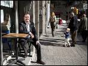
Alfred Bosch, en la UPF, donde es profesor.-M. ÁNGELES TORRES
El independiente Alfred Bosch (Barcelona, 1961) encabezaba la lista de una coalición independentista formada por ERC, Reagrupament y la plataforma ciudadana Catalunya Sí
El independiente Alfred Bosch (Barcelona, 1961) encabezaba la lista de una coalición independentista formada por ERC, Reagrupament y la plataforma ciudadana Catalunya Sí. Bosch es una voz que viene de fuera del partido con una promesa de renovación. Su discurso pretende acercarse a la ciudadanía y su objetivo era llegar al Congreso para defender los derechos de los catalanes.
Continuar leyendo...
Pakistán revisará todas sus relaciones con EEUU y la OTAN
2011-11-26T19:36:00+01:00
Urge a EEUU a abandonar una base aérea tras el ataque de la coalición que ha acabado con la vida de 25 soldados paquistaníes
Pakistán ha anunciado que va a revisar todas sus relaciones diplomáticas, militares y de inteligencia con Estados Unidos y la OTAN tras el ataque de la coalición que ha acabado con la vida de 25 soldados paquistaníes.
Urge a EEUU a abandonar una base aérea tras el ataque de la coalición que ha acabado con la vida de 25 soldados paquistaníes
Pakistán ha anunciado que va a revisar todas sus relaciones diplomáticas, militares y de inteligencia con Estados Unidos y la OTAN tras el ataque de la coalición que ha acabado con la vida de 25 soldados paquistaníes.
Continuar leyendo...
Las FARC matan a cuatro rehenes durante un rescate
2011-11-26T18:44:00+01:00
Un ataque del Ejército colombiano contra la guerrilla desata la ejecución.
"Pido el favor de que se me dé la oportunidad de conocerlo, compartir mis triunfos y hacerle sentir orgulloso de mí". Los sueños escritos que Johan Steven envió en enero a Alfonso Cano, en forma de carta, jamás serán cumplidos. La inocencia del niño, convertido por la sociedad colombiana en símbolo de la esperanza, no ablandó al líder guerrillero.
Un ataque del Ejército colombiano contra la guerrilla desata la ejecución.
"Pido el favor de que se me dé la oportunidad de conocerlo, compartir mis triunfos y hacerle sentir orgulloso de mí". Los sueños escritos que Johan Steven envió en enero a Alfonso Cano, en forma de carta, jamás serán cumplidos. La inocencia del niño, convertido por la sociedad colombiana en símbolo de la esperanza, no ablandó al líder guerrillero.
Continuar leyendo...
EL PSOE rebaja al 10% los avales necesarios para ser precandidato
2011-11-26T18:09:00+01:00
El 38º Congreso Federal del partido se celebrará finalmente en Sevilla los días 3, 4 y 5 de febrero
El Comité Federal del PSOE ha aprobado por unanimidad convocar el 38º Congreso Federal para los días 3, 4 y 5 de febrero en Sevilla, lugar donde se elegirá una nueva dirección, una designación abierta a todos los militantes del partido siempre que consigan el 10% de los avales de este órgano (una rebaja respecto al 15% que proponía inicialmente la dirección federal, según han informado fuentes socialistas).
Pantalla gigante desplegada en la Conferencia Política que organizó el PSOE para aprobar el programa electoral del 20-N.-MARTA JARA
El 38º Congreso Federal del partido se celebrará finalmente en Sevilla los días 3, 4 y 5 de febrero
El Comité Federal del PSOE ha aprobado por unanimidad convocar el 38º Congreso Federal para los días 3, 4 y 5 de febrero en Sevilla, lugar donde se elegirá una nueva dirección, una designación abierta a todos los militantes del partido siempre que consigan el 10% de los avales de este órgano (una rebaja respecto al 15% que proponía inicialmente la dirección federal, según han informado fuentes socialistas).
Continuar leyendo...
Alemania y Francia preparan un nuevo Pacto de Estabilidad
2011-11-26T17:54:00+01:00
Según el diario germano Bild, de esta forma se saltarían la necesidad de ratificación de los 27
El rotativo, que cita círculos diplomáticos, explica que esta nueva vuelta de tuerca del eje franco-alemán tiene la doble "ventaja" de ser "más rápido" que un acuerdo que precise la ratificación de los 27 estados miembros para entrar en vigor y de ejercer una mayor presión sobre los países reticentes.
El presidente francés, Nicolas Sarkozy, y la canciller alemana, Angela Merkel.-MICHAEL PROBST (AP)
Según el diario germano Bild, de esta forma se saltarían la necesidad de ratificación de los 27
El rotativo, que cita círculos diplomáticos, explica que esta nueva vuelta de tuerca del eje franco-alemán tiene la doble "ventaja" de ser "más rápido" que un acuerdo que precise la ratificación de los 27 estados miembros para entrar en vigor y de ejercer una mayor presión sobre los países reticentes.
Continuar leyendo...
'Curiosity' parte en busca de vida en Marte
2011-11-26T16:31:00+01:00
Se trata de la misión más ambiciosa con destino Marte. La nave llegará al planeta rojo en agosto de 2012
'Curiosity', el robot mejor equipado hasta la fecha para la exploración espacial, ha iniciado hoy una travesía de 9,6 millones de kilómetros en ocho meses y medio en busca de respuestas sobre la vida en Marte.
Se trata de la misión más ambiciosa con destino Marte. La nave llegará al planeta rojo en agosto de 2012
'Curiosity', el robot mejor equipado hasta la fecha para la exploración espacial, ha iniciado hoy una travesía de 9,6 millones de kilómetros en ocho meses y medio en busca de respuestas sobre la vida en Marte.
Continuar leyendo...
Los islamistas arrasan en las elecciones legislativas marroquíes
2011-11-26T15:04:00+01:00
El Partido Justicia y Desarrollo obtiene casi el doble de escaños que la formación nacionalista Istiqlal
Los islamistas ganaron las elecciones marroquíes y por eso, de acuerdo a la nueva Constitución, un dirigente del vencedor Partido Justicia y Desarrollo (PJD) se convertirá en el presidente más poderoso de Marruecos desde la independencia.
El Partido Justicia y Desarrollo obtiene casi el doble de escaños que la formación nacionalista Istiqlal
Los islamistas ganaron las elecciones marroquíes y por eso, de acuerdo a la nueva Constitución, un dirigente del vencedor Partido Justicia y Desarrollo (PJD) se convertirá en el presidente más poderoso de Marruecos desde la independencia.
Continuar leyendo...
Denuncian al papa por no ponerse el cinturón en el papamóvil
2011-11-26T13:47:00+01:00
Un alemán asegura haberle visto sin él en reiteradas ocasiones durante la visita de Benedicto XVI a Alemania
Un ciudadano alemán ha presentado una denuncia contra Benedicto XVI por no llevar el cinturón de seguridad abrochado cuando viaja en su papamóvil, según informa en su edición de el diario Westfälische Rundschau.
El papa Benedicto XVI saluda desde el papamóvil en el aeródromo de Cuatro Vientos.-EFE/Archivo
Un alemán asegura haberle visto sin él en reiteradas ocasiones durante la visita de Benedicto XVI a Alemania
Un ciudadano alemán ha presentado una denuncia contra Benedicto XVI por no llevar el cinturón de seguridad abrochado cuando viaja en su papamóvil, según informa en su edición de el diario Westfälische Rundschau.
Continuar leyendo...
La Policía investiga si Bretón dio a sus hijos Orfidal
2011-11-26T08:00:00+01:00
Continúan las investigaciones sobre el paradero de los menores desaparecidos
Los policías encargados de las pesquisas sobre la desaparición de Ruth y José, los hermanos de 6 y 2 años cuyo rastro se perdió en Córdoba el pasado 8 de octubre, investigan si su padre, José Bretón, pudo suministrar a ambos aquel día una importante cantidad de tranquilizantes, en concreto, del conocido con el nombre comercial de Orfidal.
José María Sánchez de Puerta, abogado de José Bretón.-RAFA ALCAIDE (EFE)
Continúan las investigaciones sobre el paradero de los menores desaparecidos
Los policías encargados de las pesquisas sobre la desaparición de Ruth y José, los hermanos de 6 y 2 años cuyo rastro se perdió en Córdoba el pasado 8 de octubre, investigan si su padre, José Bretón, pudo suministrar a ambos aquel día una importante cantidad de tranquilizantes, en concreto, del conocido con el nombre comercial de Orfidal.
Continuar leyendo...
Nueva jornada de disturbios violentos en El Cairo
2011-11-26T12:21:00+01:00
La Policía egipcia afirma que la muerte de un manifestante fue "por error" y pide disculpas
Egipto ha vuelto a vivir una nueva jornada de disturbios entre la Policía y los manifestantes.
Un manifestante herido en un enfrentamiento con las fuerzas de seguridad frente al Parlamento.-AP Photo/Bernat Armangue
La Policía egipcia afirma que la muerte de un manifestante fue "por error" y pide disculpas
Egipto ha vuelto a vivir una nueva jornada de disturbios entre la Policía y los manifestantes.
Continuar leyendo...
Bono pide que el líder del PSOE sea un español "sin complejos"
2011-11-26T11:12:00+01:00
Cree que cualquier planteamiento desvertebrador sería "equivocado"
El dirigente socialista José Bono ha vuelto a abogar por que el próximo secretario general del PSOE apueste por España y deje al margen la defensa de los territorios.
Cree que cualquier planteamiento desvertebrador sería "equivocado"
El dirigente socialista José Bono ha vuelto a abogar por que el próximo secretario general del PSOE apueste por España y deje al margen la defensa de los territorios.
Continuar leyendo...
Zapatero pide un debate "robusto" para un PSOE "herido"
2011-11-26T10:49:00+01:00
El presidente del Gobierno en funciones llama a la participación en el comité federal de los socialistas para volver a ser "pronto" alternativa de Gobierno
El secretario general del PSOE y presidente del Gobierno en funciones, José Luis Rodríguez Zapatero, reconoció este sábado que el partido ha salido "herido" de la derrota electoral, y pidió por ello un debate "robusto" para que vuelva a ser "pronto" alternativa de gobierno.
El presidente del Gobierno en funciones llama a la participación en el comité federal de los socialistas para volver a ser "pronto" alternativa de Gobierno
El secretario general del PSOE y presidente del Gobierno en funciones, José Luis Rodríguez Zapatero, reconoció este sábado que el partido ha salido "herido" de la derrota electoral, y pidió por ello un debate "robusto" para que vuelva a ser "pronto" alternativa de gobierno.
Continuar leyendo...
Ponche, Santa Claus y basket
2011-11-26T10:21:00+01:00
La patronal del la Liga y los jugadores alcanzan una acuerdo para desconvocar el cierre patronal e iniciar la competición
No al mismo nivel que otras tradiciones arraigadas, pero sentarse en familia a ver la sesión doble de NBA el día de Navidad es una costumbre muy en uso en Estados Unidos. El calendario reserva para ese día dos de los mejores partidos de la Liga regular que son televisados para todo el país. Viendo los encuentros disputados en esa fecha durante los últimos años se podría hacer una historia express del baloncesto profesional estadounidense.
Pau Gasol, durante un partido con Los Lakers.- AFP
La patronal del la Liga y los jugadores alcanzan una acuerdo para desconvocar el cierre patronal e iniciar la competición
No al mismo nivel que otras tradiciones arraigadas, pero sentarse en familia a ver la sesión doble de NBA el día de Navidad es una costumbre muy en uso en Estados Unidos. El calendario reserva para ese día dos de los mejores partidos de la Liga regular que son televisados para todo el país. Viendo los encuentros disputados en esa fecha durante los últimos años se podría hacer una historia express del baloncesto profesional estadounidense.
Continuar leyendo...
Botella se distancia de Aguirre
2011-11-26T08:00:00+01:00
El cese de Granados y el futuro del Ayuntamiento de Madrid hieren una relación ya tocada
El mismo día que se confirmó que Mariano Rajoy llevaba en las listas a Alberto Ruiz-Gallardón a más de uno en el partido se le iluminó una idea en la cabeza. Dado que la sucesora del alcalde es Ana Botella, por fin las relaciones entre Comunidad y Ayuntamiento, muy tocadas por los continuos enfrentamientos entre regidor y presidenta, iban a ir viento en popa. "A lo mejor Botella y Aguirre logran transmitir a los ciudadanos que pertenecen al mismo partido", ironizaba hace poco más de un mes un destacado dirigente del PP de Madrid.
Ana Botella observa a la presidenta de la Comunidad de Madrid, Esperanza Aguirre.
El cese de Granados y el futuro del Ayuntamiento de Madrid hieren una relación ya tocada
El mismo día que se confirmó que Mariano Rajoy llevaba en las listas a Alberto Ruiz-Gallardón a más de uno en el partido se le iluminó una idea en la cabeza. Dado que la sucesora del alcalde es Ana Botella, por fin las relaciones entre Comunidad y Ayuntamiento, muy tocadas por los continuos enfrentamientos entre regidor y presidenta, iban a ir viento en popa. "A lo mejor Botella y Aguirre logran transmitir a los ciudadanos que pertenecen al mismo partido", ironizaba hace poco más de un mes un destacado dirigente del PP de Madrid.
Continuar leyendo...
Entre islamistas anda el juego
2011-11-26T08:00:00+01:00
Ya lo saben los emigrantes marroquíes. La apresurada reforma de la Constitución de su país, aprobada a mansalva el pasado 2 de julio, fue una formidable operación de maquillaje. Así, para dicho referéndum los consulados se llenaron de urnas.
Ya lo saben los emigrantes marroquíes. La apresurada reforma de la Constitución de su país, aprobada a mansalva el pasado 2 de julio, fue una formidable operación de maquillaje. Así, para dicho referéndum los consulados se llenaron de urnas.
Continuar leyendo...
Feministas piden a Rajoy que no cambie la ley contra el maltrato
2011-11-25T23:00:00+01:00
Varias ciudades españolas acogen manifestaciones en señal de repulsa por los crímenes machistas
"Ni una más. Actuemos contra cualquier manifestación de machismo". Con esta firme petición terminó por la tarde en Madrid el acto de conmemoración del Día Internacional contra la Violencia de Género, en el que cientos de personas se concentraron en la Puerta del Sol de Madrid para recordar a las 54 mujeres que este año murieron asesinadas por sus parejas o ex parejas. En otras ciudades españolas, como Almería, Girona, Valladolid o Vigo, también se celebraron actos de repulsa de la violencia machista.
Concentración celebrada en la Puerta del Sol de Madrid para recordar a las 54 fallecidas por la violencia machista en 2011. -REYES SEDANO
Varias ciudades españolas acogen manifestaciones en señal de repulsa por los crímenes machistas
"Ni una más. Actuemos contra cualquier manifestación de machismo". Con esta firme petición terminó por la tarde en Madrid el acto de conmemoración del Día Internacional contra la Violencia de Género, en el que cientos de personas se concentraron en la Puerta del Sol de Madrid para recordar a las 54 mujeres que este año murieron asesinadas por sus parejas o ex parejas. En otras ciudades españolas, como Almería, Girona, Valladolid o Vigo, también se celebraron actos de repulsa de la violencia machista.
Continuar leyendo...
Un abuelo de 49 años dona un riñón a su nieto de 5
2011-11-25T22:56:00+01:00
El niño se recupera en el Virgen del Rocío de Sevilla. La juventud del donante fue clave para lograr el éxito
Kevin, un chico almeriense de 5 años, se recupera en una habitación del Hospital Virgen del Rocío, de Sevilla, gracias al riñón izquierdo de su abuelo Francisco, también almeriense, de 49. "El trasplante ha salido bien. Los primeros días son clave, pero en principio tanto el donante como el chico se están recuperando y responden a la perfección", explica Rafael Medina, director de la Unidad de Gestión Clínica de Urología y Nefrología. Para él, en el aspecto médico, el trasplante no ha presentado particularidad especialmente reseñable que lo diferencie de los otros nueve de donantes vivos realizados en el Virgen del Rocío, cinco de ellos a niños, o de los 44 realizados en lo que va de año en toda Andalucía. Pero el caso de Kevin es único.
Francisco, el donante, acompañado de los padres del niño que ha recibido su riñón, su hijo Sabino y la esposa de este, Alexandra, ayer en el Virgel del Rocío de Sevilla.-EFE
El niño se recupera en el Virgen del Rocío de Sevilla. La juventud del donante fue clave para lograr el éxito
Kevin, un chico almeriense de 5 años, se recupera en una habitación del Hospital Virgen del Rocío, de Sevilla, gracias al riñón izquierdo de su abuelo Francisco, también almeriense, de 49. "El trasplante ha salido bien. Los primeros días son clave, pero en principio tanto el donante como el chico se están recuperando y responden a la perfección", explica Rafael Medina, director de la Unidad de Gestión Clínica de Urología y Nefrología. Para él, en el aspecto médico, el trasplante no ha presentado particularidad especialmente reseñable que lo diferencie de los otros nueve de donantes vivos realizados en el Virgen del Rocío, cinco de ellos a niños, o de los 44 realizados en lo que va de año en toda Andalucía. Pero el caso de Kevin es único.
Continuar leyendo...
Rubalcaba será designado portavoz en la investidura
2011-11-26T08:00:00+01:00
Eduardo Madina y Elena Valenciano optan a ser número dos en el Parlamento
La Ejecutiva federal del PSOE tiene previsto aprobar el lunes la designación de Alfredo Pérez Rubalcaba como portavoz del PSOE en el debate de investidura del próximo presidente del Gobierno, previsto para los días 20 y 21 de diciembre.
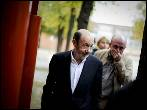
El candidado Rubalcaba, en una imagen de la campaña electoral.MARTA JARA (PUBLICO)
Eduardo Madina y Elena Valenciano optan a ser número dos en el Parlamento
La Ejecutiva federal del PSOE tiene previsto aprobar el lunes la designación de Alfredo Pérez Rubalcaba como portavoz del PSOE en el debate de investidura del próximo presidente del Gobierno, previsto para los días 20 y 21 de diciembre.
Continuar leyendo...
Mediaset también cancela 'Las noticias de las 2'
2011-11-25T23:00:00+01:00
Es el cuarto espacio que desaparece de la parrilla de este grupo en una semana
Mediaset España ha dedicado esta semana a limpiar su parrilla. El último programa que se suma a la lista de cancelaciones es Las noticias de las 2. Más allá del rigor, espacio que presentaban Silvia Abril y Ana Morgade en Cuatro.
Ana Morgade y Silvia Abril. Cuatro
Es el cuarto espacio que desaparece de la parrilla de este grupo en una semana
Mediaset España ha dedicado esta semana a limpiar su parrilla. El último programa que se suma a la lista de cancelaciones es Las noticias de las 2. Más allá del rigor, espacio que presentaban Silvia Abril y Ana Morgade en Cuatro.
Continuar leyendo...
Los obispos dicen ahora que no darán instrucciones al PP
2011-11-26T08:00:00+01:00
Llevan ocho años funcionando como partido de la oposición, llamando a los fieles a manifestarse en las calles, incitando a la desobediencia civil ante las "leyes injustas", clamando contra las reformas en materia de educación, libertades públicas e igualdad. Pero ahora, cuando el resultado electoral del 20 de noviembre ha llevado al poder al Partido Popular, los obispos evitan cualquier tipo de confrontación, hasta llegar a asegurar que "no se va a dar ninguna directiva al Gobierno, porque no se le ha dado nunca".
El portavoz de la Conferencia Episcopal, Juan Antonio Martínez Camino, ayer. efeJESÚS BASTANTE
Llevan ocho años funcionando como partido de la oposición, llamando a los fieles a manifestarse en las calles, incitando a la desobediencia civil ante las "leyes injustas", clamando contra las reformas en materia de educación, libertades públicas e igualdad. Pero ahora, cuando el resultado electoral del 20 de noviembre ha llevado al poder al Partido Popular, los obispos evitan cualquier tipo de confrontación, hasta llegar a asegurar que "no se va a dar ninguna directiva al Gobierno, porque no se le ha dado nunca".
Continuar leyendo...
"Se exige más al tiempo que a la predicción de la Bolsa"
2011-11-26T08:00:00+01:00
El equipo de meteorología de TVE publica un libro con la ayuda de la audiencia
Desde la época de los chamanes al hombre cibernético de la actualidad, el ser humano ha vivido obsesionado con el tiempo que va a hacer mañana. Incluso hubiese ayudado mucho a Napoleón en sus planes imperiales saber que el invierno no es una buena época para conquistar Rusia.
Los miembros del equipo de 'El Tiempo' de Televisión Española.-RTVE
El equipo de meteorología de TVE publica un libro con la ayuda de la audiencia
Desde la época de los chamanes al hombre cibernético de la actualidad, el ser humano ha vivido obsesionado con el tiempo que va a hacer mañana. Incluso hubiese ayudado mucho a Napoleón en sus planes imperiales saber que el invierno no es una buena época para conquistar Rusia.
Continuar leyendo...
Matas admite que contrató a Urdangarin con actas falsas
2011-11-26T08:00:00+01:00
Dice que es "habitual" en un órgano público regido por derecho privado
El expresident de Illes Balears Jaume Matas admitió ayer que las actas falsas sobre reuniones que no han existido por parte de organismos públicos constituyen "una práctica habitual". Dos de esas actas falsas plasman el acuerdo de la Fundación Illesport, dependiente del Govern, para contratar al Instituto Nóos, al frente del cual estaba Iñaki Urdangarin. La justificación de Matas pasa porque la Fundación Illesport es una entidad pública que sin embargo está "sujeta, en su modus operandi, al derecho privado".
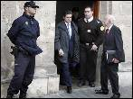
El expresident del Govern balear, Jaume Matas, abandona los juzgados de Palma.-JAIME REINA
Dice que es "habitual" en un órgano público regido por derecho privado
El expresident de Illes Balears Jaume Matas admitió ayer que las actas falsas sobre reuniones que no han existido por parte de organismos públicos constituyen "una práctica habitual". Dos de esas actas falsas plasman el acuerdo de la Fundación Illesport, dependiente del Govern, para contratar al Instituto Nóos, al frente del cual estaba Iñaki Urdangarin. La justificación de Matas pasa porque la Fundación Illesport es una entidad pública que sin embargo está "sujeta, en su modus operandi, al derecho privado".
Continuar leyendo...
Partido vital, mes fascinante
2011-11-26T08:00:00+01:00
Aún sin Iniesta, Guardiola advierte del peligro de esta mini fase y apela a la concentración de sus jugadores
Revitalizado por el espectáculo que protagonizó el miércoles ante el Milan, el Barcelona se adentra en un mes de competición tan "fascinante" como "peligroso". Así lo anuncia Pep Guardiola, emocionado aún por la actuación de sus muchachos en San Siro, punto de partida de un tramo del curso marcado por un par de delicias competitivas: el clásico ante el Madrid y el Mundial de clubes. Luego, la Navidad traerá la pausa. Y el técnico del Barça aspira a alcanzarla "lo más cerca posible del líder".
Pep Guardiola acude, ayer, a la sala de prensa de la Ciutat Esportiva de Sant Joan Despí.
Aún sin Iniesta, Guardiola advierte del peligro de esta mini fase y apela a la concentración de sus jugadores
Revitalizado por el espectáculo que protagonizó el miércoles ante el Milan, el Barcelona se adentra en un mes de competición tan "fascinante" como "peligroso". Así lo anuncia Pep Guardiola, emocionado aún por la actuación de sus muchachos en San Siro, punto de partida de un tramo del curso marcado por un par de delicias competitivas: el clásico ante el Madrid y el Mundial de clubes. Luego, la Navidad traerá la pausa. Y el técnico del Barça aspira a alcanzarla "lo más cerca posible del líder".
Continuar leyendo...
World Press Photo: Las huellas del dolor
2011-11-26T08:00:00+01:00
El CCCB de Barcelona acoge hasta el 18 de diciembre una exposición con 170 imágenes de los fotoperiodistas galardonados con los prestigiosos premios
A Bibi Aisha la desfiguraron como castigo por huir de la casa de su marido. La tortura de esta chica empezó a los 12 años, cuando ella y su hermana menor fueron entregadas a la familia de un combatiente talibán. Una vez casada, regresó a casa de sus padres quejándose del trato violento que recibía en su familia política. Vivió tranquila hasta que una noche los talibanes la encontraron. Primero le cortaron las orejas y, después, la nariz. Mutilada y repudiada, Bibi Aisha terminó abandonada y sin recursos, hasta que, en Kabul, la organización Womenfor Afgan Women le ofreció ayuda psicológica y le brindó la posibilidad de trasladarse a Estados Unidos para recibir terapia y someterse a una reconstrucción facial.
Un hombre posa delante de su casa en Sudán. Guillerm Valle, España. Tercer premio Fotografías individuales. Retratos.
El CCCB de Barcelona acoge hasta el 18 de diciembre una exposición con 170 imágenes de los fotoperiodistas galardonados con los prestigiosos premios
A Bibi Aisha la desfiguraron como castigo por huir de la casa de su marido. La tortura de esta chica empezó a los 12 años, cuando ella y su hermana menor fueron entregadas a la familia de un combatiente talibán. Una vez casada, regresó a casa de sus padres quejándose del trato violento que recibía en su familia política. Vivió tranquila hasta que una noche los talibanes la encontraron. Primero le cortaron las orejas y, después, la nariz. Mutilada y repudiada, Bibi Aisha terminó abandonada y sin recursos, hasta que, en Kabul, la organización Womenfor Afgan Women le ofreció ayuda psicológica y le brindó la posibilidad de trasladarse a Estados Unidos para recibir terapia y someterse a una reconstrucción facial.
Continuar leyendo...
Las familias quieren celebrar ya el último juicio del Yak-42
2011-11-26T08:00:00+01:00
La defensa pidió el fin de la instrucción por las presuntas irregularidades en la contratación del vuelo
Las familias de los militares fallecidos en el accidente del Yak-42, ocurrido en Trab-zon (Turquía) el 26 de mayo de 2003, coinciden con la defensa y consideran que ya ha llegado el momento de dar por concluida la instrucción del segundo procedimiento penal abierto por el siniestro.
Una mujer, con la foto de su familiar fallecido.-GABRIEL PECOT
La defensa pidió el fin de la instrucción por las presuntas irregularidades en la contratación del vuelo
Las familias de los militares fallecidos en el accidente del Yak-42, ocurrido en Trab-zon (Turquía) el 26 de mayo de 2003, coinciden con la defensa y consideran que ya ha llegado el momento de dar por concluida la instrucción del segundo procedimiento penal abierto por el siniestro.
Continuar leyendo...
Nadal, un líder que pierde motivación
2011-11-25T23:00:00+01:00
El número dos del mundo apenas descansará tras la Copa Davis
¿Ha perdido chispa Rafa Nadal? Él mismo respondía el jueves por la noche, en el O2 Arena de Greenwich, al terminar su azaroso paso por la Copa Masters. El domingo jugó ante el estadounidense Fish aquejado de gastroenteritis, el martes cayó ante Federer con un inesperado 6-0 y no pudo con el francés Tsonga. "Me están fallando cosas que siempre había tenido, como la explosividad y el ímpetu que provocaban agobio en los rivales", así de claro resumió Nadal su floja actuación en la Copa Masters.
Nadal, el jueves, durante el partido que perdió ante Tsonga. -REUTERS
El número dos del mundo apenas descansará tras la Copa Davis
¿Ha perdido chispa Rafa Nadal? Él mismo respondía el jueves por la noche, en el O2 Arena de Greenwich, al terminar su azaroso paso por la Copa Masters. El domingo jugó ante el estadounidense Fish aquejado de gastroenteritis, el martes cayó ante Federer con un inesperado 6-0 y no pudo con el francés Tsonga. "Me están fallando cosas que siempre había tenido, como la explosividad y el ímpetu que provocaban agobio en los rivales", así de claro resumió Nadal su floja actuación en la Copa Masters.
Continuar leyendo...